Análisis Exploratorio de Datos#
Librerías#
import pandas as pd
import numpy as np
import missingno as msno
import scikit_posthocs as sp
import matplotlib.pyplot as plt
import seaborn as sns
import warnings
warnings.filterwarnings("ignore", category=FutureWarning)
warnings.filterwarnings("ignore", category=UserWarning)
from scipy.stats import kruskal
from collections import defaultdict
from scipy.stats import chi2_contingency
pd.options.display.float_format = '{:,.2f}'.format
Lectura#
df = pd.read_excel('registros.xlsx')
df.info()
<class 'pandas.DataFrame'>
RangeIndex: 3471 entries, 0 to 3470
Data columns (total 40 columns):
# Column Non-Null Count Dtype
--- ------ -------------- -----
0 codigo 3471 non-null str
1 edad 3470 non-null float64
2 dias_abstinencia 3471 non-null int64
3 nombre 3471 non-null str
4 volumen_ml 3467 non-null float64
5 ph 2958 non-null float64
6 mucolisis 3437 non-null str
7 viscosidad 3421 non-null str
8 color 3412 non-null str
9 olor 2828 non-null str
10 celulas_redondas 3210 non-null object
11 leucocitos 1963 non-null object
12 aglutinacion_pct 2350 non-null object
13 espermatozoides_por_eyaculado 3468 non-null float64
14 concentracion_por_ml 3468 non-null float64
15 test_eosina_pct 2878 non-null float64
16 motilidad_progresiva_pct 3466 non-null float64
17 motilidad_no_progresiva_pct 3467 non-null float64
18 inmovil_pct 3467 non-null float64
19 motilidad_total_pct 3467 non-null float64
20 espermatozoides_normales_pct 2844 non-null float64
21 espermatozoides_anormales_pct 2843 non-null float64
22 alt_cabeza_pct 2837 non-null float64
23 alt_cola_pct 2829 non-null float64
24 alt_pieza_intermedia_pct 2838 non-null float64
25 indice_teratozoospermia 2836 non-null float64
26 rem1 387 non-null object
27 rem2 350 non-null object
28 rem3 390 non-null object
29 comentarios 3354 non-null str
30 año 3471 non-null int64
31 tipo_comentario 3471 non-null str
32 trazas_gel 3471 non-null str
33 identificacion 3468 non-null object
34 examen_hora 2509 non-null str
35 otras_celulas 104 non-null str
36 concentracion_total/volumen = concentracion_volumen 3295 non-null str
37 motilidad_suma_bien 3268 non-null str
38 motilidad_inmovil_100 3471 non-null str
39 espermatozoides_normales_anormales=100 3471 non-null str
dtypes: float64(16), int64(2), object(7), str(15)
memory usage: 1.1+ MB
Resumen General
Este DataFrame contiene 3,471 registros de análisis de semen (espermiogramas) con 40 columnas, lo que representa una base de datos clínica de fertilidad masculina.
Estructura de los Datos
1. Variables Identificativas
codigo: Identificador único del paciente (string)nombre: Nombre del paciente (string)identificacion: Otro tipo de identificación (object, 3 valores nulos)año: Año del estudio (int64)
2. Variables Demográficas
edad: Edad del paciente (float64, 1 valor nulo)dias_abstinencia: Días de abstinencia sexual previa (int64, completo)
3. Variables del Seminograma (Principales)
Características Físicas:
volumen_ml: Volumen de la muestra en ml (float64, 4 nulos)ph: pH de la muestra (float64, 513 nulos)mucolisis: Característica de la mucosidad (string, 34 nulos)viscosidad: Grado de viscosidad (string, 50 nulos)color: Color de la muestra (string, 59 nulos)olor: Olor de la muestra (string, 643 nulos)
Recuento Celular:
celulas_redondas: Células redondas presentes (object, 261 nulos)leucocitos: Presencia de leucocitos (object, 1,508 nulos)espermatozoides_por_eyaculado: Número total (float64, 3 nulos)concentracion_por_ml: Concentración en millones/ml (float64, 3 nulos)
Viabilidad y Motilidad:
test_eosina_pct: Porcentaje de espermatozoides viables (float64, 593 nulos)motilidad_progresiva_pct: % con movimiento progresivo (float64, 5 nulos)motilidad_no_progresiva_pct: % con movimiento no progresivo (float64, 4 nulos)inmovil_pct: % de espermatozoides inmóviles (float64, 4 nulos)motilidad_total_pct: % de motilidad total (float64, 4 nulos)
Morfología:
espermatozoides_normales_pct: % normales (float64, 627 nulos)espermatozoides_anormales_pct: % anormales (float64, 628 nulos)alt_cabeza_pct: % alteraciones de cabeza (float64, 634 nulos)alt_cola_pct: % alteraciones de cola (float64, 642 nulos)alt_pieza_intermedia_pct: % alteraciones de pieza intermedia (float64, 633 nulos)indice_teratozoospermia: Índice de teratozoospermia (float64, 635 nulos)
4. Variables Derivadas/Verificación
concentracion_total/volumen = concentracion_volumen: Verificación de cálculo (string, 176 nulos)motilidad_suma_bien: Verificación de suma de motilidades (string, 203 nulos)motilidad_inmovil_100: Verificación de consistencia (string, completo)espermatozoides_normales_anormales=100: Verificación de suma normales+anormales (string, completo)
5. Observaciones
comentarios: Notas clínicas (string, 117 nulos)tipo_comentario: Categoría del comentario (string, completo)otras_celulas: Otras células presentes (string, 3,367 nulos)trazas_gel: Presencia de trazas de gel (string, completo)examen_hora: Presencia de bacterias (string, 962 nulos)
6. Registros Adicionales
rem1,rem2,rem3: Campos de observación/revisión (object)
Fortalezas
Buen tamaño muestral (3,471 registros)
Variables clínicas completas en su mayoría
Incluye verificaciones de consistencia interna
Cubre todos los parámetros clave de un espermiograma estándar (OMS)
Análisis de Completitud de Datos en Registros#
Con el objetivo de evaluar la calidad e integridad de la base de datos de seminogramas, se procede a calcular un indicador de completitud para cada registro. Este indicador cuantifica el número total de campos no nulos presentes en cada fila del DataFrame, permitiendo identificar aquellos pacientes con información incompleta que podrían requerir un análisis más detallado o ser excluidos de estudios posteriores.
df["completitud"] = df.notna().sum(axis=1)
df["completitud"].describe()
count 3,471.00
mean 33.45
std 4.07
min 15.00
25% 33.00
50% 35.00
75% 36.00
max 39.00
Name: completitud, dtype: float64
Resumen General
Los resultados muestran que, en promedio, cada registro tiene 34.45 campos completos de un total de 40 columnas, lo que representa un 86.1% de completitud general. Esto indica una buena calidad de datos en términos de integridad.
Análisis Detallado por Estadísticos
1. Medidas de Tendencia Central
Media = 34.45: Promedio de campos completos por registro
Mediana (50%) = 36.00: La mitad de los registros tienen 36 o más campos completos
Media vs Mediana: La media es ligeramente menor que la mediana (34.45 vs 36.00), lo que sugiere que hay algunos registros con valores extremadamente bajos (sesgo negativo)
2. Distribución Percentilar
25% (Q1) = 34.00: El 25% de los registros tienen ≤ 34 campos completos (85% de completitud)
75% (Q3) = 37.00: El 75% de los registros tienen ≤ 37 campos completos (92.5% de completitud)
Rango intercuartílico (IQR) = 3: La mayoría de los registros (50% central) tienen entre 34 y 37 campos completos, indicando alta consistencia
3. Valores Extremos
Mínimo = 16.00: El registro más incompleto solo tiene 16 campos (40% de completitud)
Máximo = 40.00: Al menos un registro está completamente lleno (100% de completitud)
Rango = 24: Gran variabilidad entre el peor y el mejor registro
4. Dispersión
Desviación estándar = 4.07: Variabilidad moderada alrededor de la media
Coeficiente de variación (CV) = 4.07/34.45 = 11.8%: Dispersión relativamente baja, indicando consistencia en los datos
Fortalezas
Excelente calidad general: 86% de completitud promedio es alto para datos clínicos
Datos mayoritariamente completos: El percentil 75 muestra que 3/4 de los registros tienen ≥ 37 campos (92.5%)
Baja variabilidad: La mayoría de los registros son consistentes entre sí
Visualización de Patrones de Datos Faltantes#
Para identificar visualmente la distribución y los patrones de valores ausentes en el DataFrame, se emplea un gráfico de matriz de nulos (missingno matrix). Esta visualización permite detectar:
Columnas con mayor proporción de datos faltantes.
Patrones sistemáticos de valores ausentes.
Posibles relaciones entre variables incompletas.
Registros que concentran múltiples valores faltantes.
plt.figure(figsize=(16, 8))
msno.matrix(
df,
figsize=(16, 8),
fontsize=10,
sparkline=True,
labels=True
)
plt.title('Patrón de Datos Faltantes', fontsize=14, fontweight='bold')
plt.ylabel('Índice de Registros', fontsize=12)
plt.xlabel('Columnas', fontsize=12)
plt.tight_layout()
plt.show()
<Figure size 1600x800 with 0 Axes>
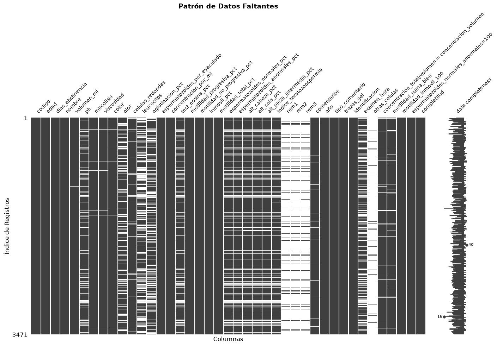
Análisis de Valores Faltantes por Variable#
Para complementar el análisis visual de datos ausentes, se elabora un resumen estadístico que cuantifica la cantidad y porcentaje de valores faltantes para cada una de las 40 variables del estudio. Este resumen permitirá:
Identificar las variables con mayor proporción de datos ausentes.
Establecer umbrales de exclusión para variables con excesivos nulos.
Evaluar el impacto de los datos faltantes en análisis específicos.
resumen = pd.DataFrame({
'No Nulos': df.count(),
'Nulos': df.isnull().sum(),
'% Faltantes': (df.isnull().sum() / len(df) * 100)
}).sort_values('% Faltantes', ascending=False)
display(resumen)
| No Nulos | Nulos | % Faltantes | |
|---|---|---|---|
| otras_celulas | 104 | 3367 | 97.00 |
| rem2 | 350 | 3121 | 89.92 |
| rem1 | 387 | 3084 | 88.85 |
| rem3 | 390 | 3081 | 88.76 |
| leucocitos | 1963 | 1508 | 43.45 |
| aglutinacion_pct | 2350 | 1121 | 32.30 |
| examen_hora | 2509 | 962 | 27.72 |
| olor | 2828 | 643 | 18.52 |
| alt_cola_pct | 2829 | 642 | 18.50 |
| indice_teratozoospermia | 2836 | 635 | 18.29 |
| alt_cabeza_pct | 2837 | 634 | 18.27 |
| alt_pieza_intermedia_pct | 2838 | 633 | 18.24 |
| espermatozoides_anormales_pct | 2843 | 628 | 18.09 |
| espermatozoides_normales_pct | 2844 | 627 | 18.06 |
| test_eosina_pct | 2878 | 593 | 17.08 |
| ph | 2958 | 513 | 14.78 |
| celulas_redondas | 3210 | 261 | 7.52 |
| motilidad_suma_bien | 3268 | 203 | 5.85 |
| concentracion_total/volumen = concentracion_volumen | 3295 | 176 | 5.07 |
| comentarios | 3354 | 117 | 3.37 |
| color | 3412 | 59 | 1.70 |
| viscosidad | 3421 | 50 | 1.44 |
| mucolisis | 3437 | 34 | 0.98 |
| motilidad_progresiva_pct | 3466 | 5 | 0.14 |
| volumen_ml | 3467 | 4 | 0.12 |
| motilidad_total_pct | 3467 | 4 | 0.12 |
| motilidad_no_progresiva_pct | 3467 | 4 | 0.12 |
| inmovil_pct | 3467 | 4 | 0.12 |
| espermatozoides_por_eyaculado | 3468 | 3 | 0.09 |
| concentracion_por_ml | 3468 | 3 | 0.09 |
| identificacion | 3468 | 3 | 0.09 |
| edad | 3470 | 1 | 0.03 |
| codigo | 3471 | 0 | 0.00 |
| dias_abstinencia | 3471 | 0 | 0.00 |
| nombre | 3471 | 0 | 0.00 |
| año | 3471 | 0 | 0.00 |
| tipo_comentario | 3471 | 0 | 0.00 |
| trazas_gel | 3471 | 0 | 0.00 |
| motilidad_inmovil_100 | 3471 | 0 | 0.00 |
| espermatozoides_normales_anormales=100 | 3471 | 0 | 0.00 |
| completitud | 3471 | 0 | 0.00 |
Resumen General
El análisis de completitud por variable revela una base de datos con calidad heterogénea, donde encontramos desde variables perfectamente completas (0% nulos) hasta variables prácticamente vacías (97% nulos). Se identifican 4 grupos claramente diferenciados según el porcentaje de datos faltantes.
Grupo 1: Variables Críticas (>30% Nulos)
Variable |
Nulos |
% Faltantes |
|---|---|---|
|
3,367 |
97.00% |
|
3,121 |
89.92% |
|
3,084 |
88.85%** |
|
3,081 |
88.76% |
|
1,508 |
43.45% |
|
1,121 |
32.30% |
|
962 |
27.72% |
Grupo 2: Variables con Nulos Moderados (10-30%)
Variable |
Nulos |
% Faltantes |
|---|---|---|
|
643 |
18.52% |
|
642 |
18.50% |
|
635 |
18.29% |
|
634 |
18.27% |
|
633 |
18.24% |
|
628 |
18.09% |
|
627 |
18.06% |
|
593 |
17.08% |
|
513 |
14.78% |
Patrón Identificado: Las variables de morfología (alt_cabeza, alt_cola, alt_pieza, índice, normales/anormales) tienen ~18% de nulos de manera consistente. Esto sugiere que los datos faltantes no son aleatorios, probablemente corresponden a muestras donde no se realizó el análisis morfológico completo.
Grupo 3: Variables con Bajo Nivel de Nulos (1-10%)
Variable |
Nulos |
% Faltantes |
|---|---|---|
|
261 |
7.52% |
|
203 |
5.85% |
|
176 |
5.07% |
|
117 |
3.37% |
|
59 |
1.70% |
|
50 |
1.44% |
|
34 |
0.98% |
Grupo 4: Variables Prácticamente Completas (<1% Nulos)
Variable |
Nulos |
% Faltantes |
|---|---|---|
|
5 |
0.14% |
|
4 |
0.12% |
|
4 |
0.12% |
|
4 |
0.12% |
|
4 |
0.12% |
|
3 |
0.09% |
|
3 |
0.09% |
|
3 |
0.09% |
|
1 |
0.03% |
8 variables |
0 |
0.00% |
Variables perfectas (0% nulos): codigo, nombre, dias_abstinencia, año tipo_comentario, trazas_gel, motilidad_inmovil_100, espermatozoides_normales_anormales=100 y completitud (calculada)
Patrones y Hallazgos Clave
Variables de Verificación
motilidad_inmovil_100(100% completa) - Buena señal de control de calidadespermatozoides_normales_anormales=100(100% completa) - Buena señalmotilidad_suma_bien(94.15% completa) - Mayoría de registros consistentes
Variables Clínicas Clave
Categoría |
Variables |
Completitud |
|---|---|---|
Motilidad |
Todas las de motilidad |
99.86% |
Concentración |
Concentración y total |
99.91% |
Volumen |
volumen_ml |
99.88% |
Morfología |
Todas las de morfología |
~82% |
Viabilidad |
test_eosina_pct |
82.92% |
Leucocitos |
leucocitos |
56.55% |
Exclusión de Variables
Las variables color, olor, leucocitos, otras_celulas y REM (rem1, rem2, rem3) fueron conservadas en la base de datos original, sin embargo, no se incluyeron en el análisis exploratorio posterior debido a las siguientes razones:
1. Variables descriptivas cualitativas: Color y Olor
Naturaleza subjetiva: Son variables cualitativas con escaso valor estadístico para modelos cuantitativos
Bajo poder explicativo: Aportan información clínica orientativa pero no significativa para análisis correlacionales
Limitaciones metodológicas: Su evaluación depende de la percepción del técnico y condiciones de procesamiento
2. Variables REM (rem1, rem2, rem3)
Datos insuficientes: Presentan entre 88.8% y 89.9% de valores faltantes
Campos obsoletos: Probablemente corresponden a campos administrativos en desuso del sistema de registro
No representativos: Los pocos registros con datos no son representativos de la muestra total
3. Variable “otras_celulas”
Datos prácticamente inexistentes: 97% de valores faltantes (solo 104 registros completos)
Registro esporádico: Solo se anotaba ante hallazgos excepcionales, introduciendo sesgo de notificación
4. Variable “leucocitos”
Alto porcentaje de faltantes: 43.45% de datos ausentes (1,508 casos sin registro)
Conversación con experta: La doctora Yeira manifestó que esta variable no era de importancia en el estudio
Conclusión
La exclusión de estas variables se basa en criterios de calidad de datos (alto porcentaje de nulos), relevancia clínica (bajo valor predictivo) y robustez metodológica (evitar sesgos y pérdida de potencia estadística). El conjunto final de variables seleccionadas garantiza un análisis confiable con un tamaño muestral adecuado para cada variable incluida.
df = df.drop(columns=['olor','color','leucocitos','rem1','rem2','rem3', 'otras_celulas'])
Grupos diagnosticos y definición#
Azoospermia - Absence or complete lack of spermatozoa in the ejaculate
Oligozoospermia - Sperm count less than 15 million per ml
Teratozoospermia - having less than 4% of sperm with normal morphology
Asthenoteratozoospermia - having less than 42% of all motile sperm and less than 4% of sperm with normal morphology
Oligoasthenoteratozoospermia (OAT) - less than 15 million sperm/mL, less than 42% total motility, and less than 4% of normal morphology
Oligoasthenozoospermia - Having less than 4% normal morphology of sperm and less than 15 million sperm per ml
Oligoteratozoospermia - Having less than 4% normal morphology and less than 15 million sperm per ml
Normozoospermia - having semen parameters (≥15 million sperm/mL, ≥40% overall motility, and ≥4% normal morphology)
condiciones = [
# Azoospermia
df['concentracion_por_ml'] == 0,
# Oligoasthenoteratozoospermia (OAT)
(
(df['concentracion_por_ml'] < 15000000) &
(df['motilidad_total_pct'] < 42) &
(df['espermatozoides_normales_pct'] < 4)
),
# Asthenoteratozoospermia
(
(df['motilidad_total_pct'] < 42) &
(df['espermatozoides_normales_pct'] < 4)
),
# Oligoasthenozoospermia
(
(df['concentracion_por_ml'] < 15000000) &
(df['motilidad_total_pct'] < 42)
),
# Oligoteratozoospermia
(
(df['concentracion_por_ml'] < 15000000) &
(df['espermatozoides_normales_pct'] < 4)
),
# Oligozoospermia
(
df['concentracion_por_ml'] < 15000000
),
# Teratozoospermia
(
df['espermatozoides_normales_pct'] < 4
),
# Normozoospermia
(
(df['concentracion_por_ml'] >= 15000000) &
(df['motilidad_total_pct'] >= 40) &
(df['espermatozoides_normales_pct'] >= 4)
)
]
diagnosticos = [
'Azoospermia',
'Oligoasthenoteratozoospermia',
'Asthenoteratozoospermia',
'Oligoasthenozoospermia',
'Oligoteratozoospermia',
'Oligozoospermia',
'Teratozoospermia',
'Normozoospermia'
]
df['diagnostico'] = np.select(
condiciones,
diagnosticos,
default='Otros'
)
Oligo: concentración espermática <15 millones/mL.
Terato: <4 % de espermatozoides con morfología normal.
Astheno: motilidad total <42 %.
df['diagnostico'].value_counts()
diagnostico
Normozoospermia 906
Teratozoospermia 817
Otros 550
Oligoasthenoteratozoospermia 437
Asthenoteratozoospermia 243
Oligoteratozoospermia 174
Azoospermia 172
Oligoasthenozoospermia 103
Oligozoospermia 69
Name: count, dtype: int64
Categorías por año#
def grafica_proporcion(var):
tabla = (
pd.crosstab(
df['año'],
df[var],
normalize='index'
) * 100
)
print('\nDistribución porcentual del diagnóstico por año')
display(tabla.round(2))
ax = tabla.plot(
kind='bar',
stacked=True,
figsize=(10, 5)
)
for container in ax.containers:
labels = [
f'{bar.get_height():.1f}%'
if bar.get_height() >= 3 else ''
for bar in container
]
ax.bar_label(
container,
labels=labels,
label_type='center',
fontsize=8,
color='white'
)
plt.ylabel('Porcentaje (%)')
plt.xlabel('Año')
plt.title(f'{var} por año')
plt.legend(title=f'{var}', bbox_to_anchor=(1.05, 1), loc='upper left')
plt.tight_layout()
plt.show()
grafica_proporcion('diagnostico')
Distribución porcentual del diagnóstico por año
| diagnostico | Asthenoteratozoospermia | Azoospermia | Normozoospermia | Oligoasthenoteratozoospermia | Oligoasthenozoospermia | Oligoteratozoospermia | Oligozoospermia | Otros | Teratozoospermia |
|---|---|---|---|---|---|---|---|---|---|
| año | |||||||||
| 17 | 6.27 | 5.72 | 22.62 | 15.80 | 1.63 | 6.54 | 1.36 | 1.63 | 38.42 |
| 18 | 7.90 | 4.06 | 29.12 | 13.77 | 2.48 | 6.09 | 1.81 | 10.16 | 24.60 |
| 19 | 5.10 | 7.10 | 31.04 | 13.30 | 3.55 | 4.43 | 2.44 | 11.31 | 21.73 |
| 20 | 5.48 | 6.13 | 29.68 | 12.58 | 2.90 | 6.77 | 2.58 | 12.90 | 20.97 |
| 21 | 9.26 | 3.97 | 30.42 | 12.70 | 2.12 | 2.91 | 1.32 | 18.78 | 18.52 |
| 22 | 5.95 | 5.68 | 28.38 | 10.54 | 4.32 | 4.05 | 2.43 | 18.65 | 20.00 |
| 23 | 5.74 | 3.83 | 25.68 | 10.93 | 3.28 | 6.28 | 2.73 | 24.86 | 16.67 |
| 24 | 5.95 | 3.57 | 24.70 | 12.20 | 2.68 | 3.87 | 1.49 | 23.81 | 21.73 |
| 25 | 10.11 | 4.37 | 16.39 | 11.48 | 3.55 | 4.37 | 1.91 | 21.04 | 26.78 |
| 26 | 11.90 | 4.76 | 5.95 | 10.71 | 3.57 | 4.76 | 1.19 | 23.81 | 33.33 |
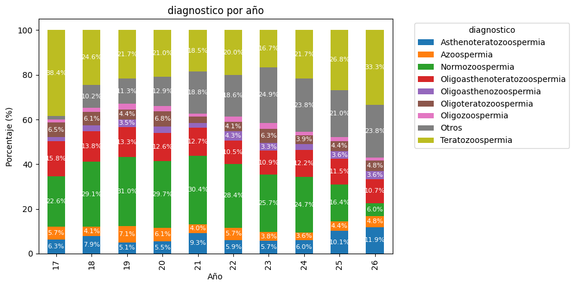
Aumento en categoría otros, esto se debe que hay pacientes que no cuentan con la variable de ‘espermatozoides_normales_pct’, por lo tanto, es imposible clasificarlos en alguna categoría
df[df['diagnostico']=='Otros'][['concentracion_por_ml','motilidad_total_pct','espermatozoides_normales_pct']]
| concentracion_por_ml | motilidad_total_pct | espermatozoides_normales_pct | |
|---|---|---|---|
| 6 | 28,000,000.00 | 58.00 | NaN |
| 10 | 40,000,000.00 | 28.00 | NaN |
| 13 | 20,500,000.00 | 6.00 | NaN |
| 18 | 102,000,000.00 | 91.00 | NaN |
| 29 | 98,000,000.00 | 53.00 | NaN |
| ... | ... | ... | ... |
| 3438 | 33,000,000.00 | 56.00 | NaN |
| 3439 | 15,000,000.00 | 54.00 | NaN |
| 3446 | 30,000,000.00 | 49.00 | NaN |
| 3450 | 132,000,000.00 | 80.00 | NaN |
| 3453 | 55,000,000.00 | 48.00 | NaN |
550 rows × 3 columns
Proporción de NA por año en variable espermatozoides_normales_pct#
tabla_na = (
df.groupby('año')['espermatozoides_normales_pct']
.apply(lambda x: x.isna().mean() * 100)
.to_frame(name='Porcentaje NA')
)
print('\nPorcentaje de valores faltantes en espermatozoides_normales_pct por año')
display(tabla_na.round(2))
tabla_na.plot(
kind='bar',
figsize=(8, 5),
legend=False
)
plt.ylabel('Porcentaje (%)')
plt.xlabel('Año')
plt.title('Valores faltantes de espermatozoides_normales_pct por año')
plt.tight_layout()
plt.show()
Porcentaje de valores faltantes en espermatozoides_normales_pct por año
| Porcentaje NA | |
|---|---|
| año | |
| 17 | 3.00 |
| 18 | 9.93 |
| 19 | 15.30 |
| 20 | 17.10 |
| 21 | 19.31 |
| 22 | 22.16 |
| 23 | 28.14 |
| 24 | 23.81 |
| 25 | 24.59 |
| 26 | 26.19 |
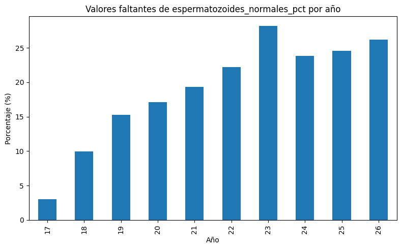
Diferencias significativas en grupos diagnosticos#
def chi_proporciones(var):
tabla = pd.crosstab(df['año'], df[var])
display(tabla)
chi2, p, gl, esperados = chi2_contingency(tabla)
print(f"Chi² = {chi2:.3f}")
print(f"Grados de libertad = {gl}")
print(f"p-value = {p:.5f}")
n = tabla.to_numpy().sum()
k = min(tabla.shape) - 1
cramers_v = np.sqrt(chi2 / (n * k))
print(f"V de Cramér = {cramers_v:.3f}")
chi_proporciones('diagnostico')
| diagnostico | Asthenoteratozoospermia | Azoospermia | Normozoospermia | Oligoasthenoteratozoospermia | Oligoasthenozoospermia | Oligoteratozoospermia | Oligozoospermia | Otros | Teratozoospermia |
|---|---|---|---|---|---|---|---|---|---|
| año | |||||||||
| 17 | 23 | 21 | 83 | 58 | 6 | 24 | 5 | 6 | 141 |
| 18 | 35 | 18 | 129 | 61 | 11 | 27 | 8 | 45 | 109 |
| 19 | 23 | 32 | 140 | 60 | 16 | 20 | 11 | 51 | 98 |
| 20 | 17 | 19 | 92 | 39 | 9 | 21 | 8 | 40 | 65 |
| 21 | 35 | 15 | 115 | 48 | 8 | 11 | 5 | 71 | 70 |
| 22 | 22 | 21 | 105 | 39 | 16 | 15 | 9 | 69 | 74 |
| 23 | 21 | 14 | 94 | 40 | 12 | 23 | 10 | 91 | 61 |
| 24 | 20 | 12 | 83 | 41 | 9 | 13 | 5 | 80 | 73 |
| 25 | 37 | 16 | 60 | 42 | 13 | 16 | 7 | 77 | 98 |
| 26 | 10 | 4 | 5 | 9 | 3 | 4 | 1 | 20 | 28 |
Chi² = 259.237
Grados de libertad = 72
p-value = 0.00000
V de Cramér = 0.097
Diagnostico solo con concentración#
condiciones = [
# Azoospermia
df['concentracion_por_ml'] == 0,
# Oligozoospermia
(
(df['concentracion_por_ml'] < 15000000)
),
# Normozoospermia
(
(df['concentracion_por_ml'] >= 15000000)
)
]
diagnosticos = [
'Azoospermia',
'Oligozoospermia',
'Normozoospermia',
]
df['diagnostico'] = np.select(
condiciones,
diagnosticos,
default='Otros'
)
Categorías por año#
grafica_proporcion('diagnostico')
Distribución porcentual del diagnóstico por año
| diagnostico | Azoospermia | Normozoospermia | Oligozoospermia | Otros |
|---|---|---|---|---|
| año | ||||
| 17 | 5.72 | 68.94 | 25.34 | 0.00 |
| 18 | 4.06 | 71.78 | 24.15 | 0.00 |
| 19 | 7.10 | 69.18 | 23.73 | 0.00 |
| 20 | 6.13 | 68.71 | 24.84 | 0.32 |
| 21 | 3.97 | 76.98 | 19.05 | 0.00 |
| 22 | 5.68 | 72.97 | 21.35 | 0.00 |
| 23 | 3.83 | 72.68 | 23.22 | 0.27 |
| 24 | 3.57 | 76.19 | 20.24 | 0.00 |
| 25 | 4.37 | 74.32 | 21.31 | 0.00 |
| 26 | 4.76 | 73.81 | 20.24 | 1.19 |
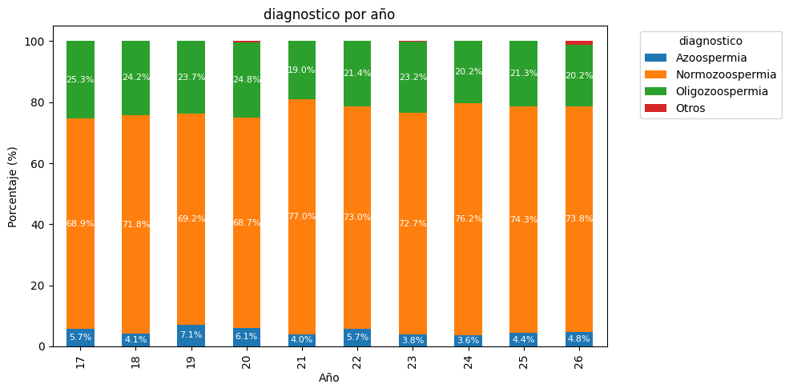
df[df['diagnostico']=='Otros'][['concentracion_por_ml','motilidad_total_pct','espermatozoides_normales_pct','tipo_comentario']]
| concentracion_por_ml | motilidad_total_pct | espermatozoides_normales_pct | tipo_comentario | |
|---|---|---|---|---|
| 1447 | NaN | NaN | NaN | congelacion |
| 3112 | NaN | 56.00 | NaN | fragmentacion_adn |
| 3185 | NaN | NaN | NaN | fragmentacion_adn |
Diferencias significativas en las proporciones de grupos diagnosticos por año?#
chi_proporciones('diagnostico')
| diagnostico | Azoospermia | Normozoospermia | Oligozoospermia | Otros |
|---|---|---|---|---|
| año | ||||
| 17 | 21 | 253 | 93 | 0 |
| 18 | 18 | 318 | 107 | 0 |
| 19 | 32 | 312 | 107 | 0 |
| 20 | 19 | 213 | 77 | 1 |
| 21 | 15 | 291 | 72 | 0 |
| 22 | 21 | 270 | 79 | 0 |
| 23 | 14 | 266 | 85 | 1 |
| 24 | 12 | 256 | 68 | 0 |
| 25 | 16 | 272 | 78 | 0 |
| 26 | 4 | 62 | 17 | 1 |
Chi² = 37.705
Grados de libertad = 27
p-value = 0.08264
V de Cramér = 0.060
Viscosidad por año#
grafica_proporcion('viscosidad')
Distribución porcentual del diagnóstico por año
| viscosidad | AUMENTADA | LIGERAMENTE AUMENTADA | MUY AUMENTADA | NORMAL |
|---|---|---|---|---|
| año | ||||
| 17 | 33.51 | 11.72 | 0.00 | 54.77 |
| 18 | 30.16 | 12.47 | 0.00 | 57.37 |
| 19 | 32.44 | 10.51 | 0.00 | 57.05 |
| 20 | 24.51 | 10.78 | 0.00 | 64.71 |
| 21 | 24.87 | 8.02 | 0.53 | 66.58 |
| 22 | 17.08 | 7.71 | 0.00 | 75.21 |
| 23 | 21.21 | 5.51 | 0.00 | 73.28 |
| 24 | 22.12 | 7.58 | 0.00 | 70.30 |
| 25 | 25.55 | 11.26 | 0.00 | 63.19 |
| 26 | 40.91 | 16.67 | 0.00 | 42.42 |
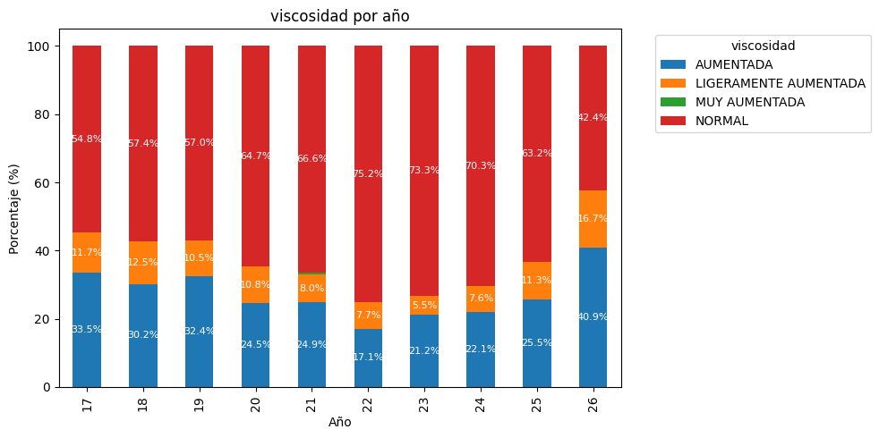
Chi2 en viscosidad y año#
chi_proporciones('viscosidad')
| viscosidad | AUMENTADA | LIGERAMENTE AUMENTADA | MUY AUMENTADA | NORMAL |
|---|---|---|---|---|
| año | ||||
| 17 | 123 | 43 | 0 | 201 |
| 18 | 133 | 55 | 0 | 253 |
| 19 | 145 | 47 | 0 | 255 |
| 20 | 75 | 33 | 0 | 198 |
| 21 | 93 | 30 | 2 | 249 |
| 22 | 62 | 28 | 0 | 273 |
| 23 | 77 | 20 | 0 | 266 |
| 24 | 73 | 25 | 0 | 232 |
| 25 | 93 | 41 | 0 | 230 |
| 26 | 27 | 11 | 0 | 28 |
Chi² = 107.169
Grados de libertad = 27
p-value = 0.00000
V de Cramér = 0.102
Post-hoc en viscosidad#
tabla = pd.crosstab(df['año'], df['viscosidad'])
chi2, p, gl, esperados = chi2_contingency(tabla)
residuos = (tabla - esperados) / esperados**0.5
display(residuos.round(2))
| viscosidad | AUMENTADA | LIGERAMENTE AUMENTADA | MUY AUMENTADA | NORMAL |
|---|---|---|---|---|
| año | ||||
| 17 | 2.68 | 1.22 | -0.46 | -2.18 |
| 18 | 1.56 | 1.84 | -0.51 | -1.71 |
| 19 | 2.51 | 0.53 | -0.51 | -1.81 |
| 20 | -0.62 | 0.59 | -0.42 | 0.18 |
| 21 | -0.55 | -1.06 | 3.81 | 0.66 |
| 22 | -3.44 | -1.23 | -0.46 | 2.70 |
| 23 | -1.90 | -2.58 | -0.46 | 2.24 |
| 24 | -1.49 | -1.26 | -0.44 | 1.46 |
| 25 | -0.29 | 0.94 | -0.46 | -0.16 |
| 26 | 2.31 | 1.81 | -0.20 | -2.18 |
Mucolisis por año#
grafica_proporcion('mucolisis')
Distribución porcentual del diagnóstico por año
| mucolisis | COMPLETA | INCOMPLETA |
|---|---|---|
| año | ||
| 17 | 59.95 | 40.05 |
| 18 | 59.64 | 40.36 |
| 19 | 62.64 | 37.36 |
| 20 | 68.95 | 31.05 |
| 21 | 71.66 | 28.34 |
| 22 | 79.06 | 20.94 |
| 23 | 74.59 | 25.41 |
| 24 | 71.52 | 28.48 |
| 25 | 71.70 | 28.30 |
| 26 | 57.83 | 42.17 |
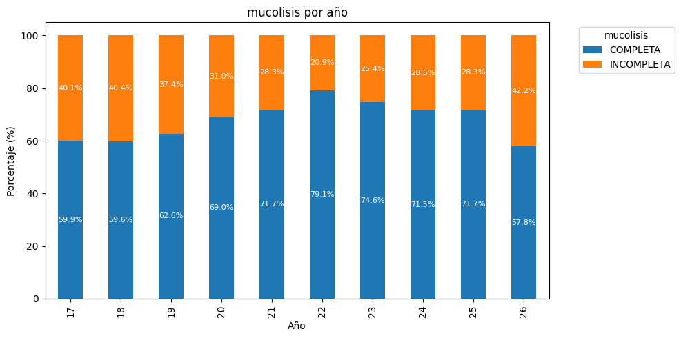
Chi2 en mucolisis#
chi_proporciones('mucolisis')
| mucolisis | COMPLETA | INCOMPLETA |
|---|---|---|
| año | ||
| 17 | 220 | 147 |
| 18 | 263 | 178 |
| 19 | 280 | 167 |
| 20 | 211 | 95 |
| 21 | 268 | 106 |
| 22 | 287 | 76 |
| 23 | 270 | 92 |
| 24 | 236 | 94 |
| 25 | 261 | 103 |
| 26 | 48 | 35 |
Chi² = 69.358
Grados de libertad = 9
p-value = 0.00000
V de Cramér = 0.142
Post-hoc en mucolisis#
tabla = pd.crosstab(df['año'], df['mucolisis'])
chi2, p, gl, esperados = chi2_contingency(tabla)
residuos = (tabla - esperados) / esperados**0.5
display(residuos.round(2))
| mucolisis | COMPLETA | INCOMPLETA |
|---|---|---|
| año | ||
| 17 | -1.91 | 2.80 |
| 18 | -2.18 | 3.19 |
| 19 | -1.42 | 2.08 |
| 20 | 0.16 | -0.23 |
| 21 | 0.81 | -1.19 |
| 22 | 2.51 | -3.67 |
| 23 | 1.47 | -2.15 |
| 24 | 0.73 | -1.07 |
| 25 | 0.81 | -1.19 |
| 26 | -1.14 | 1.67 |
Examen bacterias por año#
grafica_proporcion('examen_hora')
Distribución porcentual del diagnóstico por año
| examen_hora | BACTERIAS | BACTERIAS + | BACTERIAS ++ | BACTERIAS +++ | BACTERIAS ++++ | BACTERIAS = 2000000 | ESCASAS |
|---|---|---|---|---|---|---|---|
| año | |||||||
| 17 | 0.30 | 32.64 | 31.16 | 10.09 | 0.89 | 0.00 | 24.93 |
| 18 | 0.00 | 40.47 | 24.80 | 3.66 | 0.00 | 0.00 | 31.07 |
| 19 | 0.27 | 39.19 | 18.92 | 8.11 | 0.81 | 0.00 | 32.70 |
| 20 | 0.00 | 38.11 | 23.36 | 6.56 | 0.82 | 0.00 | 31.15 |
| 21 | 0.00 | 33.22 | 25.61 | 5.54 | 0.35 | 0.00 | 35.29 |
| 22 | 0.38 | 30.83 | 34.59 | 5.26 | 0.00 | 0.38 | 28.57 |
| 23 | 0.44 | 34.65 | 38.16 | 5.26 | 0.00 | 0.00 | 21.49 |
| 24 | 0.00 | 39.34 | 25.82 | 4.10 | 0.00 | 0.00 | 30.74 |
| 25 | 0.00 | 33.33 | 32.52 | 2.44 | 0.00 | 0.00 | 31.71 |
| 26 | 0.00 | 48.00 | 28.00 | 12.00 | 0.00 | 0.00 | 12.00 |
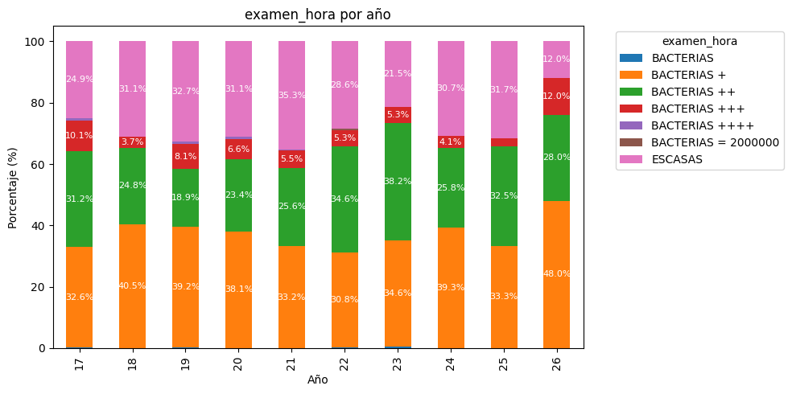
Chi2 en examen bacterias#
chi_proporciones('examen_hora')
| examen_hora | BACTERIAS | BACTERIAS + | BACTERIAS ++ | BACTERIAS +++ | BACTERIAS ++++ | BACTERIAS = 2000000 | ESCASAS |
|---|---|---|---|---|---|---|---|
| año | |||||||
| 17 | 1 | 110 | 105 | 34 | 3 | 0 | 84 |
| 18 | 0 | 155 | 95 | 14 | 0 | 0 | 119 |
| 19 | 1 | 145 | 70 | 30 | 3 | 0 | 121 |
| 20 | 0 | 93 | 57 | 16 | 2 | 0 | 76 |
| 21 | 0 | 96 | 74 | 16 | 1 | 0 | 102 |
| 22 | 1 | 82 | 92 | 14 | 0 | 1 | 76 |
| 23 | 1 | 79 | 87 | 12 | 0 | 0 | 49 |
| 24 | 0 | 96 | 63 | 10 | 0 | 0 | 75 |
| 25 | 0 | 41 | 40 | 3 | 0 | 0 | 39 |
| 26 | 0 | 12 | 7 | 3 | 0 | 0 | 3 |
Chi² = 100.154
Grados de libertad = 54
p-value = 0.00014
V de Cramér = 0.082
Post-hoc en examen bacterias#
tabla = pd.crosstab(df['año'], df['examen_hora'])
chi2, p, gl, esperados = chi2_contingency(tabla)
residuos = (tabla - esperados) / esperados**0.5
display(residuos.round(2))
| examen_hora | BACTERIAS | BACTERIAS + | BACTERIAS ++ | BACTERIAS +++ | BACTERIAS ++++ | BACTERIAS = 2000000 | ESCASAS |
|---|---|---|---|---|---|---|---|
| año | |||||||
| 17 | 0.63 | -1.09 | 1.28 | 3.01 | 1.63 | -0.37 | -1.59 |
| 18 | -0.78 | 1.38 | -1.01 | -1.91 | -1.17 | -0.39 | 0.51 |
| 19 | 0.53 | 0.95 | -3.15 | 1.60 | 1.45 | -0.38 | 1.08 |
| 20 | -0.62 | 0.49 | -1.23 | 0.32 | 1.20 | -0.31 | 0.43 |
| 21 | -0.68 | -0.85 | -0.61 | -0.36 | -0.04 | -0.34 | 1.76 |
| 22 | 0.88 | -1.46 | 2.20 | -0.53 | -0.98 | 2.75 | -0.32 |
| 23 | 1.06 | -0.40 | 3.07 | -0.49 | -0.90 | -0.30 | -2.26 |
| 24 | -0.62 | 0.81 | -0.50 | -1.24 | -0.94 | -0.31 | 0.31 |
| 25 | -0.44 | -0.53 | 1.06 | -1.63 | -0.66 | -0.22 | 0.42 |
| 26 | -0.20 | 0.98 | 0.05 | 1.21 | -0.30 | -0.10 | -1.62 |
Trazas gel por año#
grafica_proporcion('trazas_gel')
Distribución porcentual del diagnóstico por año
| trazas_gel | NO | SI |
|---|---|---|
| año | ||
| 17 | 98.64 | 1.36 |
| 18 | 97.07 | 2.93 |
| 19 | 96.45 | 3.55 |
| 20 | 98.06 | 1.94 |
| 21 | 98.15 | 1.85 |
| 22 | 98.38 | 1.62 |
| 23 | 98.63 | 1.37 |
| 24 | 97.62 | 2.38 |
| 25 | 94.26 | 5.74 |
| 26 | 95.24 | 4.76 |
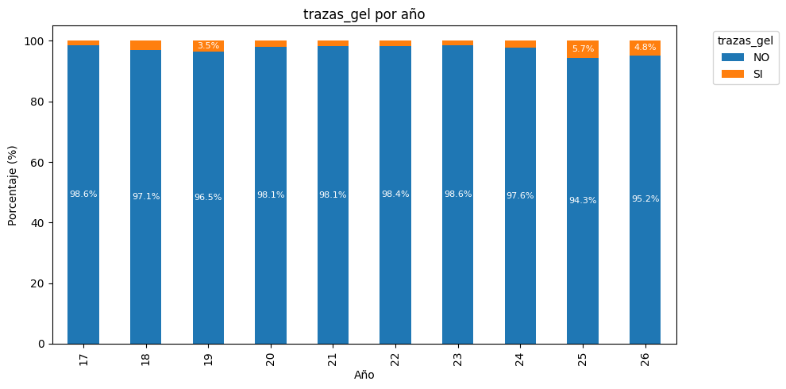
Chi2 en trazas de gel#
chi_proporciones('trazas_gel')
| trazas_gel | NO | SI |
|---|---|---|
| año | ||
| 17 | 362 | 5 |
| 18 | 430 | 13 |
| 19 | 435 | 16 |
| 20 | 304 | 6 |
| 21 | 371 | 7 |
| 22 | 364 | 6 |
| 23 | 361 | 5 |
| 24 | 328 | 8 |
| 25 | 345 | 21 |
| 26 | 80 | 4 |
Chi² = 24.626
Grados de libertad = 9
p-value = 0.00341
V de Cramér = 0.084
df_sin_texto = df.copy()
df_sin_texto['celulas_redondas'] = pd.to_numeric(
df_sin_texto['celulas_redondas'],
errors='coerce'
)
df_sin_texto['aglutinacion_pct'] = pd.to_numeric(
df_sin_texto['aglutinacion_pct'],
errors='coerce'
)
Variables numéricas - Kruskal Wallis & Post-hoc#
Edad#
def graficas_numericas(var):
resumen = (
df_sin_texto
.groupby('año')[var]
.agg(
mediana='median',
q1=lambda x: x.quantile(0.25),
q3=lambda x: x.quantile(0.75),
n='count',
media='mean',
sd='std'
)
.reset_index()
)
# Distancia desde la mediana hasta Q1 y Q3
error = [
resumen['mediana'] - resumen['q1'],
resumen['q3'] - resumen['mediana']
]
plt.figure(figsize=(8,5))
plt.errorbar(
resumen['año'],
resumen['mediana'],
yerr=error,
fmt='o-',
capsize=4,
linewidth=2,
markersize=6
)
plt.xlabel("Año")
plt.ylabel(var)
plt.ylim(
0,
resumen['q3'].max() * 1.15
)
plt.title(f"Mediana e IQR de {var} por año")
plt.grid(axis='y', alpha=.3)
plt.tight_layout()
plt.show()
tabla = (
df_sin_texto
.groupby('año')[var]
.agg(
n='count',
media='mean',
mediana='median',
min='min',
max='max',
sd='std',
var='var',
q1=lambda x: x.quantile(0.25),
q3=lambda x: x.quantile(0.75),
skewness='skew'
)
.round(2)
)
display(tabla)
graficas_numericas('edad')
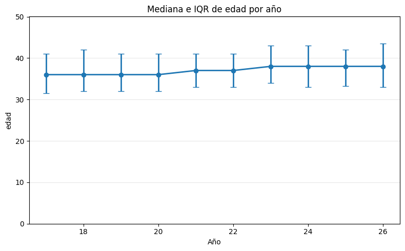
| n | media | mediana | min | max | sd | var | q1 | q3 | skewness | |
|---|---|---|---|---|---|---|---|---|---|---|
| año | ||||||||||
| 17 | 367 | 36.64 | 36.00 | 21.00 | 63.00 | 7.00 | 48.95 | 31.50 | 41.00 | 0.51 |
| 18 | 443 | 37.44 | 36.00 | 20.00 | 68.00 | 7.48 | 55.94 | 32.00 | 42.00 | 0.86 |
| 19 | 451 | 37.14 | 36.00 | 21.00 | 69.00 | 7.25 | 52.52 | 32.00 | 41.00 | 0.83 |
| 20 | 310 | 37.22 | 36.00 | 22.00 | 73.00 | 7.22 | 52.08 | 32.00 | 41.00 | 1.10 |
| 21 | 378 | 36.98 | 37.00 | 17.00 | 68.00 | 7.32 | 53.51 | 33.00 | 41.00 | 0.71 |
| 22 | 370 | 37.74 | 37.00 | 20.00 | 67.00 | 7.23 | 52.21 | 33.00 | 41.00 | 0.96 |
| 23 | 366 | 38.85 | 38.00 | 21.00 | 69.00 | 7.56 | 57.23 | 34.00 | 43.00 | 0.89 |
| 24 | 336 | 38.75 | 38.00 | 21.00 | 67.00 | 8.08 | 65.30 | 33.00 | 43.00 | 0.68 |
| 25 | 366 | 38.25 | 38.00 | 21.00 | 66.00 | 7.32 | 53.61 | 33.25 | 42.00 | 0.82 |
| 26 | 83 | 38.55 | 38.00 | 24.00 | 65.00 | 7.81 | 61.01 | 33.00 | 43.50 | 0.70 |
def kruskal_var(var):
grupos = []
for _, grupo in df_sin_texto.groupby('año'):
grupos.append(
grupo[var].dropna().values
)
stat, p = kruskal(*grupos)
print("Kruskal-Wallis")
print(f"H = {stat:.4f}")
print(f"p = {p:.6f}")
kruskal_var('edad')
Kruskal-Wallis
H = 34.0172
p = 0.000089
def post_hoc_dunn(var):
dunn = sp.posthoc_dunn(
df_sin_texto,
val_col=var,
group_col='año',
p_adjust='bonferroni'
)
sig = (
dunn.where(np.triu(np.ones(dunn.shape), k=1).astype(bool))
.stack()
.reset_index()
)
sig.columns = ['año_1', 'año_2', 'p-valor']
sig = sig[sig['p-valor'] < 0.05]
display(sig.sort_values('p-valor'))
post_hoc_dunn('edad')
| año_1 | año_2 | p-valor | |
|---|---|---|---|
| 5 | 17 | 23 | 0.00 |
| 20 | 19 | 23 | 0.03 |
| 6 | 17 | 24 | 0.03 |
| 26 | 20 | 23 | 0.04 |
Dias abstinencia#
graficas_numericas('dias_abstinencia')
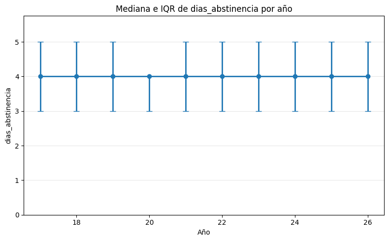
| n | media | mediana | min | max | sd | var | q1 | q3 | skewness | |
|---|---|---|---|---|---|---|---|---|---|---|
| año | ||||||||||
| 17 | 367 | 3.89 | 4.00 | 1 | 10 | 1.09 | 1.19 | 3.00 | 5.00 | 1.04 |
| 18 | 443 | 4.08 | 4.00 | 1 | 45 | 3.38 | 11.39 | 3.00 | 5.00 | 9.68 |
| 19 | 451 | 3.94 | 4.00 | 0 | 20 | 1.36 | 1.84 | 3.00 | 5.00 | 3.92 |
| 20 | 310 | 3.97 | 4.00 | 1 | 30 | 1.85 | 3.42 | 3.00 | 4.00 | 9.35 |
| 21 | 378 | 4.12 | 4.00 | 1 | 40 | 2.27 | 5.16 | 3.00 | 5.00 | 10.90 |
| 22 | 370 | 4.15 | 4.00 | 1 | 15 | 1.61 | 2.59 | 3.00 | 5.00 | 3.44 |
| 23 | 366 | 4.10 | 4.00 | 0 | 10 | 1.33 | 1.76 | 3.00 | 5.00 | 0.74 |
| 24 | 336 | 4.16 | 4.00 | 1 | 60 | 3.73 | 13.88 | 3.00 | 5.00 | 11.44 |
| 25 | 366 | 4.06 | 4.00 | 1 | 30 | 2.02 | 4.07 | 3.00 | 5.00 | 6.40 |
| 26 | 84 | 4.00 | 4.00 | 1 | 21 | 2.12 | 4.51 | 3.00 | 5.00 | 6.23 |
kruskal_var('dias_abstinencia')
Kruskal-Wallis
H = 22.3635
p = 0.007796
post_hoc_dunn('dias_abstinencia')
| año_1 | año_2 | p-valor | |
|---|---|---|---|
| 13 | 18 | 23 | 0.03 |
| 12 | 18 | 22 | 0.04 |
Volumen#
graficas_numericas('volumen_ml')
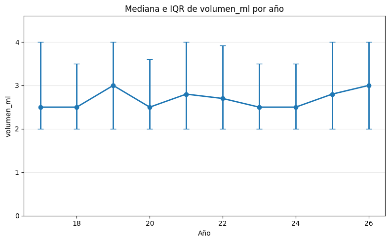
| n | media | mediana | min | max | sd | var | q1 | q3 | skewness | |
|---|---|---|---|---|---|---|---|---|---|---|
| año | ||||||||||
| 17 | 367 | 2.82 | 2.50 | 0.20 | 8.50 | 1.51 | 2.27 | 2.00 | 4.00 | 0.87 |
| 18 | 443 | 2.85 | 2.50 | 0.10 | 9.00 | 1.46 | 2.14 | 2.00 | 3.50 | 0.82 |
| 19 | 450 | 3.00 | 3.00 | 0.30 | 9.50 | 1.43 | 2.03 | 2.00 | 4.00 | 1.13 |
| 20 | 309 | 2.80 | 2.50 | 0.40 | 8.50 | 1.41 | 1.99 | 2.00 | 3.60 | 0.98 |
| 21 | 378 | 2.94 | 2.80 | 0.30 | 9.50 | 1.54 | 2.38 | 2.00 | 4.00 | 0.90 |
| 22 | 370 | 2.94 | 2.70 | 0.25 | 14.00 | 1.57 | 2.47 | 2.00 | 3.92 | 1.48 |
| 23 | 364 | 2.83 | 2.50 | 0.20 | 11.50 | 1.53 | 2.34 | 2.00 | 3.50 | 1.35 |
| 24 | 336 | 2.75 | 2.50 | 0.30 | 9.50 | 1.37 | 1.88 | 2.00 | 3.50 | 1.08 |
| 25 | 366 | 3.00 | 2.80 | 0.10 | 8.00 | 1.48 | 2.20 | 2.00 | 4.00 | 0.61 |
| 26 | 84 | 3.02 | 3.00 | 0.30 | 7.00 | 1.54 | 2.37 | 2.00 | 4.00 | 0.50 |
kruskal_var('volumen_ml')
Kruskal-Wallis
H = 13.6759
p = 0.134331
Ph#
graficas_numericas('ph')
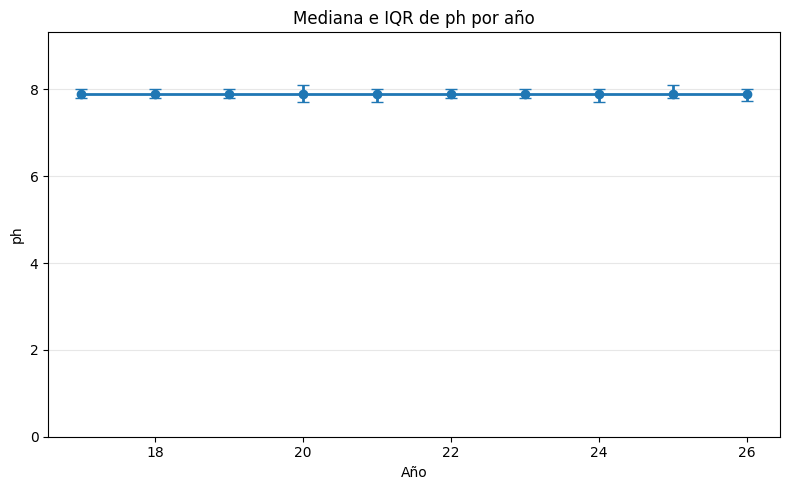
| n | media | mediana | min | max | sd | var | q1 | q3 | skewness | |
|---|---|---|---|---|---|---|---|---|---|---|
| año | ||||||||||
| 17 | 364 | 7.83 | 7.90 | 2.00 | 8.50 | 0.40 | 0.16 | 7.80 | 8.00 | -8.96 |
| 18 | 408 | 7.91 | 7.90 | 6.50 | 9.00 | 0.26 | 0.07 | 7.80 | 8.00 | -0.62 |
| 19 | 402 | 7.89 | 7.90 | 6.50 | 8.50 | 0.25 | 0.06 | 7.80 | 8.00 | -1.26 |
| 20 | 274 | 7.86 | 7.90 | 6.50 | 8.50 | 0.29 | 0.08 | 7.70 | 8.10 | -1.38 |
| 21 | 321 | 7.88 | 7.90 | 6.50 | 9.00 | 0.26 | 0.07 | 7.70 | 8.00 | -0.53 |
| 22 | 300 | 7.86 | 7.90 | 3.00 | 8.90 | 0.38 | 0.14 | 7.80 | 8.00 | -7.27 |
| 23 | 274 | 7.90 | 7.90 | 6.80 | 8.50 | 0.22 | 0.05 | 7.80 | 8.00 | -0.43 |
| 24 | 266 | 7.85 | 7.90 | 6.50 | 8.70 | 0.25 | 0.06 | 7.70 | 8.00 | -1.01 |
| 25 | 287 | 7.92 | 7.90 | 6.70 | 9.00 | 0.27 | 0.07 | 7.80 | 8.10 | -0.61 |
| 26 | 62 | 7.88 | 7.90 | 6.80 | 8.30 | 0.27 | 0.07 | 7.72 | 8.00 | -1.13 |
kruskal_var('ph')
Kruskal-Wallis
H = 26.2458
p = 0.001862
post_hoc_dunn('ph')
| año_1 | año_2 | p-valor | |
|---|---|---|---|
| 42 | 24 | 25 | 0.04 |
| 7 | 17 | 25 | 0.05 |
Celulas redondas#
graficas_numericas('celulas_redondas')
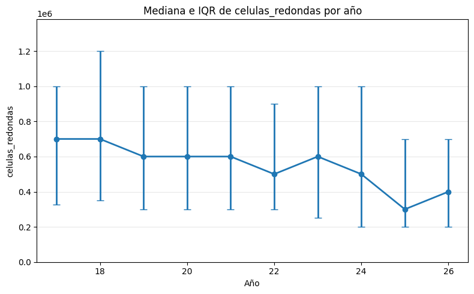
| n | media | mediana | min | max | sd | var | q1 | q3 | skewness | |
|---|---|---|---|---|---|---|---|---|---|---|
| año | ||||||||||
| 17 | 350 | 917,428.57 | 700,000.00 | 100,000.00 | 6,300,000.00 | 954,950.43 | 911,930,331,559.56 | 325,000.00 | 1,000,000.00 | 3.13 |
| 18 | 411 | 1,140,676.40 | 700,000.00 | 100,000.00 | 16,000,000.00 | 1,642,179.02 | 2,696,751,941,368.47 | 350,000.00 | 1,200,000.00 | 5.00 |
| 19 | 425 | 1,133,647.06 | 600,000.00 | 0.00 | 22,000,000.00 | 2,164,959.39 | 4,687,049,167,591.57 | 300,000.00 | 1,000,000.00 | 6.67 |
| 20 | 291 | 1,049,484.54 | 600,000.00 | 100,000.00 | 23,000,000.00 | 2,003,881.94 | 4,015,542,836,829.01 | 300,000.00 | 1,000,000.00 | 6.88 |
| 21 | 360 | 969,444.44 | 600,000.00 | 0.00 | 28,000,000.00 | 1,850,065.04 | 3,422,740,637,573.51 | 300,000.00 | 1,000,000.00 | 9.76 |
| 22 | 333 | 810,510.51 | 500,000.00 | 0.00 | 11,000,000.00 | 1,230,428.97 | 1,513,955,461,485.58 | 300,000.00 | 900,000.00 | 5.28 |
| 23 | 323 | 971,207.43 | 600,000.00 | 0.00 | 13,000,000.00 | 1,338,398.77 | 1,791,311,270,503.62 | 250,000.00 | 1,000,000.00 | 4.45 |
| 24 | 308 | 925,974.03 | 500,000.00 | 100,000.00 | 11,800,000.00 | 1,449,083.96 | 2,099,844,325,056.05 | 200,000.00 | 1,000,000.00 | 4.36 |
| 25 | 339 | 590,855.46 | 300,000.00 | 100,000.00 | 7,000,000.00 | 765,764.60 | 586,395,419,873.98 | 200,000.00 | 700,000.00 | 3.51 |
| 26 | 67 | 567,164.18 | 400,000.00 | 100,000.00 | 2,800,000.00 | 557,697.66 | 311,026,684,758.03 | 200,000.00 | 700,000.00 | 2.18 |
kruskal_var('celulas_redondas')
Kruskal-Wallis
H = 110.5974
p = 0.000000
post_hoc_dunn('celulas_redondas')
| año_1 | año_2 | p-valor | |
|---|---|---|---|
| 15 | 18 | 25 | 0.00 |
| 7 | 17 | 25 | 0.00 |
| 22 | 19 | 25 | 0.00 |
| 40 | 23 | 25 | 0.00 |
| 33 | 21 | 25 | 0.00 |
| 28 | 20 | 25 | 0.00 |
| 12 | 18 | 22 | 0.00 |
| 16 | 18 | 26 | 0.00 |
| 14 | 18 | 24 | 0.00 |
| 42 | 24 | 25 | 0.00 |
| 37 | 22 | 25 | 0.01 |
| 8 | 17 | 26 | 0.02 |
| 4 | 17 | 22 | 0.04 |
Aglutinación#
graficas_numericas('aglutinacion_pct')
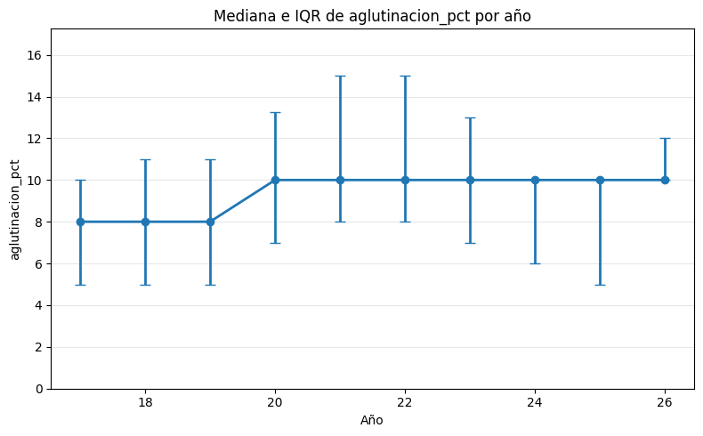
| n | media | mediana | min | max | sd | var | q1 | q3 | skewness | |
|---|---|---|---|---|---|---|---|---|---|---|
| año | ||||||||||
| 17 | 244 | 9.14 | 8.00 | 0.00 | 24.00 | 5.04 | 25.44 | 5.00 | 10.00 | 0.78 |
| 18 | 197 | 9.10 | 8.00 | 0.00 | 35.00 | 5.27 | 27.75 | 5.00 | 11.00 | 1.61 |
| 19 | 187 | 9.96 | 8.00 | 0.00 | 70.00 | 7.00 | 49.06 | 5.00 | 11.00 | 4.41 |
| 20 | 112 | 10.67 | 10.00 | 0.00 | 40.00 | 5.56 | 30.96 | 7.00 | 13.25 | 1.88 |
| 21 | 141 | 11.21 | 10.00 | 4.00 | 30.00 | 5.52 | 30.45 | 8.00 | 15.00 | 1.24 |
| 22 | 118 | 11.44 | 10.00 | 0.00 | 35.00 | 5.99 | 35.86 | 8.00 | 15.00 | 1.34 |
| 23 | 87 | 10.38 | 10.00 | 0.00 | 28.00 | 4.52 | 20.45 | 7.00 | 13.00 | 0.91 |
| 24 | 100 | 9.42 | 10.00 | 0.00 | 25.00 | 4.38 | 19.18 | 6.00 | 10.00 | 1.22 |
| 25 | 125 | 9.09 | 10.00 | 0.00 | 30.00 | 4.83 | 23.37 | 5.00 | 10.00 | 1.44 |
| 26 | 21 | 10.71 | 10.00 | 5.00 | 18.00 | 2.99 | 8.91 | 10.00 | 12.00 | 0.72 |
kruskal_var('aglutinacion_pct')
Kruskal-Wallis
H = 45.7145
p = 0.000001
post_hoc_dunn('aglutinacion_pct')
| año_1 | año_2 | p-valor |
|---|
Total eyaculado#
graficas_numericas('espermatozoides_por_eyaculado')
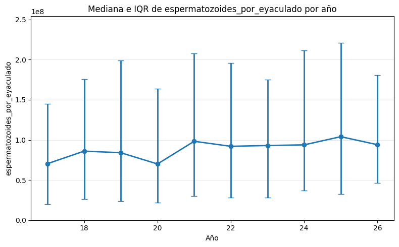
| n | media | mediana | min | max | sd | var | q1 | q3 | skewness | |
|---|---|---|---|---|---|---|---|---|---|---|
| año | ||||||||||
| 17 | 367 | 96,064,087.19 | 70,400,000.00 | 0.00 | 704,000,000.00 | 99,251,200.64 | 9,850,800,829,150,852.00 | 20,000,000.00 | 145,000,000.00 | 1.79 |
| 18 | 443 | 124,262,618.51 | 86,000,000.00 | 0.00 | 972,000,000.00 | 131,463,130.34 | 17,282,554,638,829,266.00 | 26,300,000.00 | 175,500,000.00 | 1.87 |
| 19 | 451 | 126,628,736.14 | 84,000,000.00 | 0.00 | 612,000,000.00 | 128,933,155.39 | 16,623,758,557,732,446.00 | 23,700,000.00 | 199,000,000.00 | 1.27 |
| 20 | 309 | 115,808,317.15 | 70,000,000.00 | 0.00 | 799,500,000.00 | 130,268,585.70 | 16,969,904,421,184,804.00 | 22,000,000.00 | 164,000,000.00 | 1.95 |
| 21 | 378 | 144,475,211.64 | 98,250,000.00 | 0.00 | 896,000,000.00 | 149,551,793.40 | 22,365,738,909,371,524.00 | 30,000,000.00 | 207,875,000.00 | 1.56 |
| 22 | 370 | 133,987,621.62 | 92,000,000.00 | 0.00 | 1,599,000,000.00 | 149,746,425.78 | 22,423,992,032,810,368.00 | 28,250,000.00 | 196,000,000.00 | 3.43 |
| 23 | 365 | 125,262,575.34 | 93,000,000.00 | 0.00 | 700,000,000.00 | 128,600,673.47 | 16,538,133,218,212,022.00 | 28,000,000.00 | 175,000,000.00 | 1.71 |
| 24 | 336 | 132,354,032.74 | 93,800,000.00 | 0.00 | 647,500,000.00 | 125,106,837.73 | 15,651,720,845,554,160.00 | 36,600,000.00 | 211,500,000.00 | 1.28 |
| 25 | 366 | 156,012,909.84 | 104,000,000.00 | 0.00 | 886,500,000.00 | 159,267,460.89 | 25,366,124,098,153,520.00 | 32,425,000.00 | 220,875,000.00 | 1.61 |
| 26 | 83 | 121,819,783.13 | 94,000,000.00 | 0.00 | 444,000,000.00 | 110,025,842.62 | 12,105,686,044,879,226.00 | 46,000,000.00 | 181,000,000.00 | 1.20 |
kruskal_var('espermatozoides_por_eyaculado')
Kruskal-Wallis
H = 34.7911
p = 0.000065
post_hoc_dunn('espermatozoides_por_eyaculado')
| año_1 | año_2 | p-valor | |
|---|---|---|---|
| 7 | 17 | 25 | 0.00 |
| 3 | 17 | 21 | 0.00 |
| 6 | 17 | 24 | 0.01 |
| 28 | 20 | 25 | 0.02 |
| 4 | 17 | 22 | 0.05 |
Concentración eyaculado#
graficas_numericas('concentracion_por_ml')
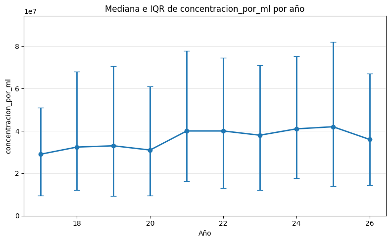
| n | media | mediana | min | max | sd | var | q1 | q3 | skewness | |
|---|---|---|---|---|---|---|---|---|---|---|
| año | ||||||||||
| 17 | 367 | 35,812,602.18 | 29,000,000.00 | 0.00 | 190,000,000.00 | 32,475,358.98 | 1,054,648,940,819,448.75 | 9,500,000.00 | 51,000,000.00 | 1.15 |
| 18 | 443 | 45,463,566.59 | 32,400,000.00 | 0.00 | 238,000,000.00 | 41,784,716.04 | 1,745,962,494,490,464.75 | 12,000,000.00 | 68,000,000.00 | 1.16 |
| 19 | 451 | 43,899,113.08 | 33,000,000.00 | 0.00 | 181,000,000.00 | 40,164,793.29 | 1,613,210,619,656,073.50 | 9,200,000.00 | 70,500,000.00 | 0.93 |
| 20 | 309 | 41,924,595.47 | 31,000,000.00 | 0.00 | 280,000,000.00 | 41,572,653.23 | 1,728,285,496,994,915.00 | 9,600,000.00 | 61,000,000.00 | 1.69 |
| 21 | 378 | 49,454,232.80 | 40,000,000.00 | 0.00 | 220,000,000.00 | 42,710,359.36 | 1,824,174,796,359,451.00 | 16,250,000.00 | 77,750,000.00 | 1.01 |
| 22 | 370 | 48,186,216.22 | 40,000,000.00 | 0.00 | 293,000,000.00 | 44,830,397.63 | 2,009,764,552,039,843.75 | 13,000,000.00 | 74,500,000.00 | 1.59 |
| 23 | 365 | 47,083,287.67 | 38,000,000.00 | 0.00 | 210,000,000.00 | 42,439,631.11 | 1,801,122,288,612,073.50 | 12,000,000.00 | 71,000,000.00 | 1.16 |
| 24 | 336 | 50,211,160.71 | 41,000,000.00 | 0.00 | 214,000,000.00 | 42,188,640.00 | 1,779,881,345,215,884.25 | 17,750,000.00 | 75,250,000.00 | 1.03 |
| 25 | 366 | 54,360,928.96 | 42,000,000.00 | 0.00 | 300,400,000.00 | 49,000,985.91 | 2,401,096,619,956,585.00 | 14,000,000.00 | 82,000,000.00 | 1.25 |
| 26 | 83 | 44,358,313.25 | 36,000,000.00 | 0.00 | 148,000,000.00 | 36,644,047.76 | 1,342,786,236,144,578.50 | 14,500,000.00 | 67,000,000.00 | 0.78 |
kruskal_var('concentracion_por_ml')
Kruskal-Wallis
H = 38.2056
p = 0.000016
post_hoc_dunn('concentracion_por_ml')
| año_1 | año_2 | p-valor | |
|---|---|---|---|
| 7 | 17 | 25 | 0.00 |
| 6 | 17 | 24 | 0.00 |
| 3 | 17 | 21 | 0.00 |
| 4 | 17 | 22 | 0.03 |
| 28 | 20 | 25 | 0.03 |
Test eosina#
graficas_numericas('test_eosina_pct')
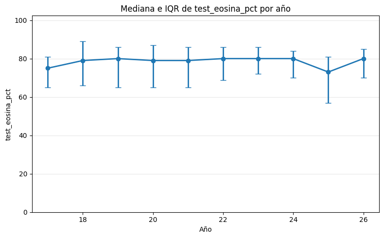
| n | media | mediana | min | max | sd | var | q1 | q3 | skewness | |
|---|---|---|---|---|---|---|---|---|---|---|
| año | ||||||||||
| 17 | 356 | 68.78 | 75.00 | 0.00 | 98.00 | 21.68 | 470.08 | 65.00 | 81.00 | -2.03 |
| 18 | 405 | 72.98 | 79.00 | 0.00 | 98.00 | 22.70 | 515.25 | 66.00 | 89.00 | -1.78 |
| 19 | 384 | 70.65 | 80.00 | 0.00 | 98.00 | 25.89 | 670.10 | 65.00 | 86.00 | -1.74 |
| 20 | 257 | 70.32 | 79.00 | 0.00 | 97.00 | 24.86 | 618.09 | 65.00 | 87.00 | -1.73 |
| 21 | 315 | 71.05 | 79.00 | 0.00 | 96.00 | 23.71 | 562.24 | 65.00 | 86.00 | -1.69 |
| 22 | 292 | 71.99 | 80.00 | 0.00 | 98.00 | 24.01 | 576.64 | 68.75 | 86.00 | -2.03 |
| 23 | 269 | 73.58 | 80.00 | 0.00 | 98.00 | 22.37 | 500.58 | 72.00 | 86.00 | -2.18 |
| 24 | 257 | 71.26 | 80.00 | 0.00 | 96.00 | 22.24 | 494.64 | 70.00 | 84.00 | -1.94 |
| 25 | 280 | 65.49 | 73.00 | 0.00 | 97.00 | 23.66 | 559.68 | 57.00 | 81.00 | -1.42 |
| 26 | 63 | 70.97 | 80.00 | 0.00 | 98.00 | 24.55 | 602.90 | 70.00 | 85.00 | -1.86 |
kruskal_var('test_eosina_pct')
Kruskal-Wallis
H = 66.3164
p = 0.000000
post_hoc_dunn('test_eosina_pct')
| año_1 | año_2 | p-valor | |
|---|---|---|---|
| 40 | 23 | 25 | 0.00 |
| 15 | 18 | 25 | 0.00 |
| 22 | 19 | 25 | 0.00 |
| 37 | 22 | 25 | 0.00 |
| 5 | 17 | 23 | 0.00 |
| 0 | 17 | 18 | 0.00 |
| 33 | 21 | 25 | 0.01 |
| 1 | 17 | 19 | 0.02 |
| 28 | 20 | 25 | 0.03 |
| 4 | 17 | 22 | 0.03 |
Motilidad progresiva#
graficas_numericas('motilidad_progresiva_pct')
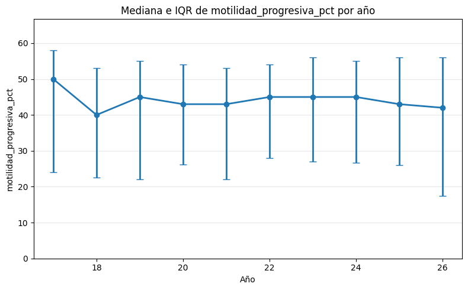
| n | media | mediana | min | max | sd | var | q1 | q3 | skewness | |
|---|---|---|---|---|---|---|---|---|---|---|
| año | ||||||||||
| 17 | 366 | 41.32 | 50.00 | 0.00 | 82.00 | 21.21 | 449.82 | 24.00 | 58.00 | -0.61 |
| 18 | 443 | 37.31 | 40.00 | 0.00 | 84.00 | 20.45 | 418.18 | 22.50 | 53.00 | -0.36 |
| 19 | 450 | 38.91 | 45.00 | 0.00 | 84.00 | 20.83 | 433.99 | 22.00 | 55.00 | -0.48 |
| 20 | 310 | 39.06 | 43.00 | 0.00 | 78.00 | 20.02 | 400.72 | 26.25 | 54.00 | -0.50 |
| 21 | 377 | 38.15 | 43.00 | 0.00 | 82.00 | 19.63 | 385.35 | 22.00 | 53.00 | -0.47 |
| 22 | 370 | 39.59 | 45.00 | 0.00 | 84.00 | 19.49 | 379.82 | 28.00 | 54.00 | -0.56 |
| 23 | 365 | 40.01 | 45.00 | 0.00 | 80.00 | 20.11 | 404.55 | 27.00 | 56.00 | -0.55 |
| 24 | 336 | 40.50 | 45.00 | 0.00 | 78.00 | 19.25 | 370.40 | 26.75 | 55.00 | -0.54 |
| 25 | 366 | 40.39 | 43.00 | 0.00 | 84.00 | 21.15 | 447.38 | 26.00 | 56.00 | -0.34 |
| 26 | 83 | 38.00 | 42.00 | 0.00 | 80.00 | 23.73 | 563.29 | 17.50 | 56.00 | -0.22 |
kruskal_var('motilidad_progresiva_pct')
Kruskal-Wallis
H = 16.3435
p = 0.060046
post_hoc_dunn('motilidad_progresiva_pct')
| año_1 | año_2 | p-valor | |
|---|---|---|---|
| 0 | 17 | 18 | 0.02 |
Motilidad no progresiva#
graficas_numericas('motilidad_no_progresiva_pct')
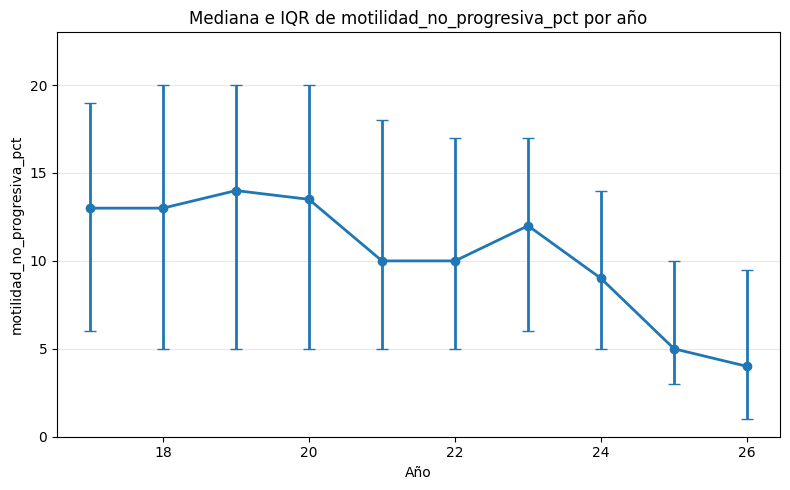
| n | media | mediana | min | max | sd | var | q1 | q3 | skewness | |
|---|---|---|---|---|---|---|---|---|---|---|
| año | ||||||||||
| 17 | 366 | 12.99 | 13.00 | 0.00 | 58.00 | 8.07 | 65.07 | 6.00 | 19.00 | 0.49 |
| 18 | 443 | 13.02 | 13.00 | 0.00 | 44.00 | 8.80 | 77.36 | 5.00 | 20.00 | 0.30 |
| 19 | 451 | 13.05 | 14.00 | 0.00 | 40.00 | 8.66 | 75.04 | 5.00 | 20.00 | 0.14 |
| 20 | 310 | 13.42 | 13.50 | 0.00 | 45.00 | 8.80 | 77.36 | 5.00 | 20.00 | 0.27 |
| 21 | 377 | 11.75 | 10.00 | 0.00 | 38.00 | 8.23 | 67.73 | 5.00 | 18.00 | 0.50 |
| 22 | 370 | 11.57 | 10.00 | 0.00 | 54.00 | 7.88 | 62.15 | 5.00 | 17.00 | 0.76 |
| 23 | 365 | 11.96 | 12.00 | 0.00 | 57.00 | 7.67 | 58.80 | 6.00 | 17.00 | 0.84 |
| 24 | 336 | 10.82 | 9.00 | 0.00 | 43.00 | 7.83 | 61.26 | 5.00 | 14.00 | 1.06 |
| 25 | 366 | 7.87 | 5.00 | 0.00 | 37.00 | 7.27 | 52.89 | 3.00 | 10.00 | 1.41 |
| 26 | 83 | 8.02 | 4.00 | 0.00 | 34.00 | 9.49 | 90.15 | 1.00 | 9.50 | 1.28 |
kruskal_var('motilidad_no_progresiva_pct')
Kruskal-Wallis
H = 157.1379
p = 0.000000
post_hoc_dunn('motilidad_no_progresiva_pct')
| año_1 | año_2 | p-valor | |
|---|---|---|---|
| 22 | 19 | 25 | 0.00 |
| 15 | 18 | 25 | 0.00 |
| 7 | 17 | 25 | 0.00 |
| 28 | 20 | 25 | 0.00 |
| 40 | 23 | 25 | 0.00 |
| 33 | 21 | 25 | 0.00 |
| 37 | 22 | 25 | 0.00 |
| 29 | 20 | 26 | 0.00 |
| 8 | 17 | 26 | 0.00 |
| 23 | 19 | 26 | 0.00 |
| 16 | 18 | 26 | 0.00 |
| 42 | 24 | 25 | 0.00 |
| 41 | 23 | 26 | 0.00 |
| 34 | 21 | 26 | 0.00 |
| 38 | 22 | 26 | 0.00 |
| 43 | 24 | 26 | 0.01 |
| 27 | 20 | 24 | 0.02 |
| 6 | 17 | 24 | 0.04 |
| 21 | 19 | 24 | 0.05 |
Inmoviles#
graficas_numericas('inmovil_pct')
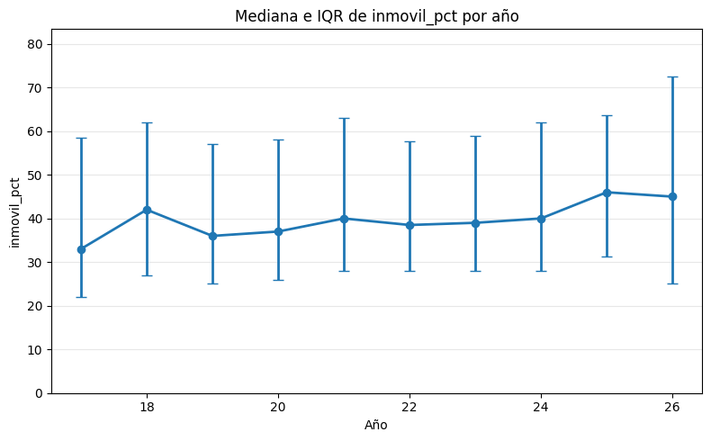
| n | media | mediana | min | max | sd | var | q1 | q3 | skewness | |
|---|---|---|---|---|---|---|---|---|---|---|
| año | ||||||||||
| 17 | 366 | 39.94 | 33.00 | 0.00 | 100.00 | 24.26 | 588.78 | 22.00 | 58.50 | 0.62 |
| 18 | 443 | 45.38 | 42.00 | 0.00 | 100.00 | 24.48 | 599.16 | 27.00 | 62.00 | 0.38 |
| 19 | 451 | 41.25 | 36.00 | 0.00 | 100.00 | 23.99 | 575.54 | 25.00 | 57.00 | 0.55 |
| 20 | 310 | 41.40 | 37.00 | 0.00 | 99.00 | 23.07 | 532.18 | 26.00 | 58.00 | 0.47 |
| 21 | 377 | 46.12 | 40.00 | 0.00 | 100.00 | 23.90 | 571.41 | 28.00 | 63.00 | 0.37 |
| 22 | 370 | 43.16 | 38.50 | 0.00 | 100.00 | 22.45 | 504.03 | 28.00 | 57.75 | 0.43 |
| 23 | 365 | 44.48 | 39.00 | 0.00 | 100.00 | 23.51 | 552.49 | 28.00 | 59.00 | 0.65 |
| 24 | 336 | 45.40 | 40.00 | 0.00 | 100.00 | 22.95 | 526.62 | 28.00 | 62.00 | 0.40 |
| 25 | 366 | 47.11 | 46.00 | 0.00 | 100.00 | 22.72 | 516.33 | 31.25 | 63.75 | 0.16 |
| 26 | 83 | 49.18 | 45.00 | 0.00 | 100.00 | 28.37 | 804.95 | 25.00 | 72.50 | 0.29 |
kruskal_var('inmovil_pct')
Kruskal-Wallis
H = 46.7368
p = 0.000000
post_hoc_dunn('inmovil_pct')
| año_1 | año_2 | p-valor | |
|---|---|---|---|
| 7 | 17 | 25 | 0.00 |
| 22 | 19 | 25 | 0.00 |
| 3 | 17 | 21 | 0.00 |
| 0 | 17 | 18 | 0.00 |
| 6 | 17 | 24 | 0.01 |
| 28 | 20 | 25 | 0.01 |
Motilidad total#
graficas_numericas('motilidad_total_pct')
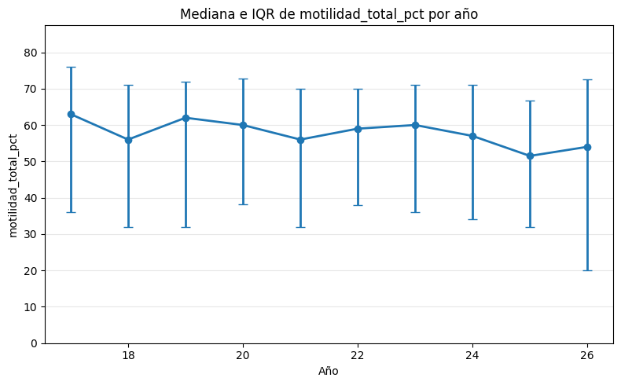
| n | media | mediana | min | max | sd | var | q1 | q3 | skewness | |
|---|---|---|---|---|---|---|---|---|---|---|
| año | ||||||||||
| 17 | 366 | 54.31 | 63.00 | 0.00 | 90.00 | 25.91 | 671.45 | 36.00 | 76.00 | -0.76 |
| 18 | 443 | 50.32 | 56.00 | 0.00 | 89.00 | 24.91 | 620.69 | 32.00 | 71.00 | -0.56 |
| 19 | 451 | 51.88 | 62.00 | 0.00 | 86.00 | 25.47 | 648.94 | 32.00 | 72.00 | -0.77 |
| 20 | 310 | 52.47 | 60.00 | 0.00 | 89.00 | 24.51 | 600.55 | 38.25 | 72.75 | -0.77 |
| 21 | 377 | 49.90 | 56.00 | 0.00 | 90.00 | 24.22 | 586.55 | 32.00 | 70.00 | -0.57 |
| 22 | 370 | 51.16 | 59.00 | 0.00 | 86.00 | 23.44 | 549.52 | 38.00 | 70.00 | -0.80 |
| 23 | 365 | 51.98 | 60.00 | 0.00 | 90.00 | 24.10 | 580.89 | 36.00 | 71.00 | -0.81 |
| 24 | 336 | 51.32 | 57.00 | 0.00 | 88.00 | 23.36 | 545.70 | 34.00 | 71.00 | -0.62 |
| 25 | 366 | 48.26 | 51.50 | 0.00 | 91.00 | 22.84 | 521.56 | 32.00 | 66.75 | -0.53 |
| 26 | 83 | 46.02 | 54.00 | 0.00 | 86.00 | 28.13 | 791.02 | 20.00 | 72.50 | -0.33 |
kruskal_var('motilidad_total_pct')
Kruskal-Wallis
H = 30.2146
p = 0.000403
post_hoc_dunn('motilidad_total_pct')
| año_1 | año_2 | p-valor | |
|---|---|---|---|
| 7 | 17 | 25 | 0.00 |
| 3 | 17 | 21 | 0.03 |
Normales#
graficas_numericas('espermatozoides_normales_pct')
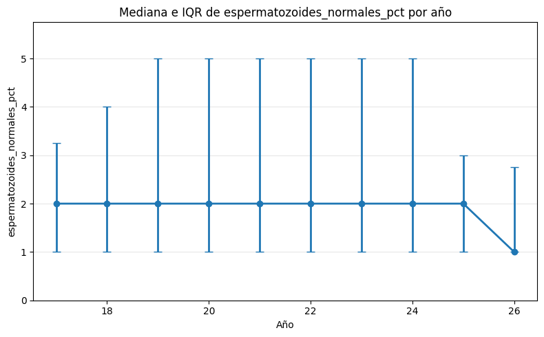
| n | media | mediana | min | max | sd | var | q1 | q3 | skewness | |
|---|---|---|---|---|---|---|---|---|---|---|
| año | ||||||||||
| 17 | 356 | 2.44 | 2.00 | 0.00 | 12.00 | 2.25 | 5.05 | 1.00 | 3.25 | 1.70 |
| 18 | 399 | 3.08 | 2.00 | 0.00 | 20.00 | 2.89 | 8.38 | 1.00 | 4.00 | 1.67 |
| 19 | 382 | 2.97 | 2.00 | 0.00 | 15.00 | 2.64 | 6.99 | 1.00 | 5.00 | 0.98 |
| 20 | 257 | 3.08 | 2.00 | 0.00 | 19.00 | 2.98 | 8.88 | 1.00 | 5.00 | 1.55 |
| 21 | 305 | 3.02 | 2.00 | 0.00 | 13.00 | 2.36 | 5.57 | 1.00 | 5.00 | 0.83 |
| 22 | 288 | 4.16 | 2.00 | 0.00 | 98.00 | 10.27 | 105.55 | 1.00 | 5.00 | 8.08 |
| 23 | 263 | 3.45 | 2.00 | 0.00 | 96.00 | 6.24 | 38.91 | 1.00 | 5.00 | 12.60 |
| 24 | 256 | 3.09 | 2.00 | 0.00 | 10.00 | 2.31 | 5.33 | 1.00 | 5.00 | 0.75 |
| 25 | 276 | 2.41 | 2.00 | 0.00 | 10.00 | 1.97 | 3.88 | 1.00 | 3.00 | 1.27 |
| 26 | 62 | 1.76 | 1.00 | 0.00 | 7.00 | 1.38 | 1.89 | 1.00 | 2.75 | 1.55 |
kruskal_var('espermatozoides_normales_pct')
Kruskal-Wallis
H = 40.8717
p = 0.000005
post_hoc_dunn('espermatozoides_normales_pct')
| año_1 | año_2 | p-valor | |
|---|---|---|---|
| 43 | 24 | 26 | 0.04 |
Anormales#
graficas_numericas('espermatozoides_anormales_pct')
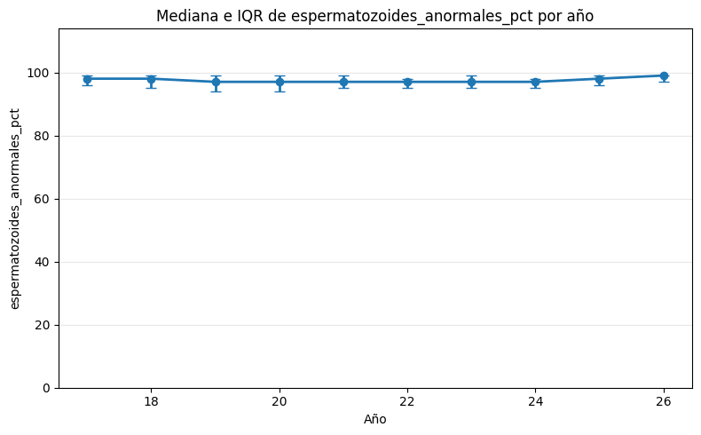
| n | media | mediana | min | max | sd | var | q1 | q3 | skewness | |
|---|---|---|---|---|---|---|---|---|---|---|
| año | ||||||||||
| 17 | 356 | 91.66 | 98.00 | 0.00 | 100.00 | 23.08 | 532.83 | 96.00 | 99.00 | -3.70 |
| 18 | 399 | 92.41 | 98.00 | 0.00 | 100.00 | 20.31 | 412.42 | 95.00 | 99.00 | -4.27 |
| 19 | 382 | 88.65 | 97.00 | 0.00 | 100.00 | 26.96 | 726.66 | 94.00 | 99.00 | -2.97 |
| 20 | 257 | 89.53 | 97.00 | 0.00 | 100.00 | 25.51 | 650.51 | 94.00 | 99.00 | -3.21 |
| 21 | 304 | 92.04 | 97.00 | 0.00 | 100.00 | 21.12 | 446.22 | 95.00 | 99.00 | -4.10 |
| 22 | 288 | 88.55 | 97.00 | 0.00 | 100.00 | 26.89 | 723.03 | 95.00 | 98.00 | -2.95 |
| 23 | 263 | 91.23 | 97.00 | 0.00 | 100.00 | 22.54 | 507.96 | 95.00 | 99.00 | -3.77 |
| 24 | 256 | 92.23 | 97.00 | 0.00 | 100.00 | 20.61 | 424.81 | 95.00 | 98.00 | -4.23 |
| 25 | 276 | 91.79 | 98.00 | 0.00 | 100.00 | 22.89 | 523.89 | 96.00 | 99.00 | -3.76 |
| 26 | 62 | 91.79 | 99.00 | 0.00 | 99.00 | 24.34 | 592.27 | 97.00 | 99.00 | -3.62 |
kruskal_var('espermatozoides_anormales_pct')
Kruskal-Wallis
H = 42.1074
p = 0.000003
post_hoc_dunn('espermatozoides_anormales_pct')
| año_1 | año_2 | p-valor | |
|---|---|---|---|
| 38 | 22 | 26 | 0.04 |
Alteración cabeza#
graficas_numericas('alt_cabeza_pct')
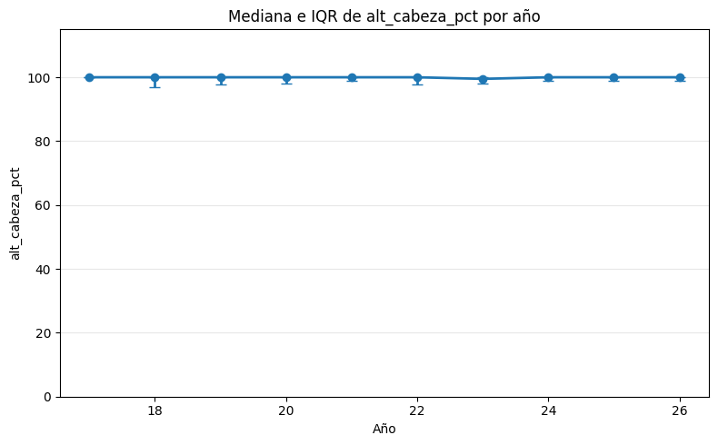
| n | media | mediana | min | max | sd | var | q1 | q3 | skewness | |
|---|---|---|---|---|---|---|---|---|---|---|
| año | ||||||||||
| 17 | 356 | 93.80 | 100.00 | 0.00 | 100.00 | 23.62 | 557.69 | 100.00 | 100.00 | -3.72 |
| 18 | 399 | 93.08 | 100.00 | 0.00 | 100.00 | 20.86 | 434.98 | 96.76 | 100.00 | -4.04 |
| 19 | 379 | 90.18 | 100.00 | 0.00 | 100.00 | 27.89 | 777.94 | 97.83 | 100.00 | -2.91 |
| 20 | 256 | 91.61 | 100.00 | 0.00 | 100.00 | 26.07 | 679.43 | 97.91 | 100.00 | -3.24 |
| 21 | 304 | 93.98 | 100.00 | 0.00 | 100.00 | 21.67 | 469.48 | 98.90 | 100.00 | -4.07 |
| 22 | 287 | 91.26 | 100.00 | 0.00 | 100.00 | 25.92 | 671.61 | 97.86 | 100.00 | -3.15 |
| 23 | 262 | 92.98 | 99.50 | 0.00 | 100.00 | 23.29 | 542.56 | 97.94 | 100.00 | -3.69 |
| 24 | 256 | 94.67 | 100.00 | 0.00 | 100.00 | 21.06 | 443.60 | 98.92 | 100.00 | -4.30 |
| 25 | 276 | 93.73 | 100.00 | 0.00 | 100.00 | 23.32 | 543.92 | 98.97 | 100.00 | -3.79 |
| 26 | 62 | 92.91 | 100.00 | 0.00 | 100.00 | 24.65 | 607.86 | 98.98 | 100.00 | -3.61 |
kruskal_var('alt_cabeza_pct')
Kruskal-Wallis
H = 132.4108
p = 0.000000
post_hoc_dunn('alt_cabeza_pct')
| año_1 | año_2 | p-valor | |
|---|---|---|---|
| 0 | 17 | 18 | 0.00 |
| 1 | 17 | 19 | 0.00 |
| 4 | 17 | 22 | 0.00 |
| 5 | 17 | 23 | 0.00 |
| 2 | 17 | 20 | 0.00 |
| 3 | 17 | 21 | 0.00 |
| 6 | 17 | 24 | 0.00 |
| 37 | 22 | 25 | 0.01 |
| 15 | 18 | 25 | 0.01 |
| 22 | 19 | 25 | 0.02 |
| 40 | 23 | 25 | 0.02 |
Alteración cola#
graficas_numericas('alt_cola_pct')
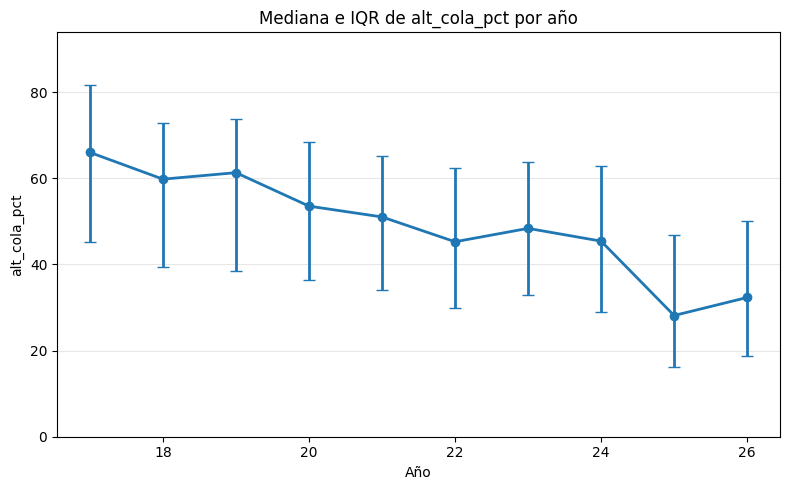
| n | media | mediana | min | max | sd | var | q1 | q3 | skewness | |
|---|---|---|---|---|---|---|---|---|---|---|
| año | ||||||||||
| 17 | 351 | 60.30 | 66.00 | 0.00 | 92.00 | 25.73 | 662.23 | 45.18 | 81.63 | -0.93 |
| 18 | 400 | 55.58 | 59.79 | 0.00 | 100.00 | 23.18 | 537.47 | 39.32 | 72.77 | -0.54 |
| 19 | 376 | 54.82 | 61.30 | 0.00 | 97.89 | 24.93 | 621.27 | 38.50 | 73.73 | -0.79 |
| 20 | 255 | 50.50 | 53.53 | 0.00 | 95.91 | 23.03 | 530.17 | 36.33 | 68.48 | -0.58 |
| 21 | 304 | 50.18 | 51.02 | 0.00 | 100.00 | 21.99 | 483.44 | 34.18 | 65.07 | -0.25 |
| 22 | 287 | 45.02 | 45.26 | 0.00 | 100.00 | 21.94 | 481.32 | 29.94 | 62.31 | -0.21 |
| 23 | 262 | 47.14 | 48.36 | 0.00 | 97.84 | 21.13 | 446.62 | 32.80 | 63.82 | -0.33 |
| 24 | 256 | 44.92 | 45.40 | 0.00 | 89.13 | 21.14 | 446.86 | 28.99 | 62.94 | -0.20 |
| 25 | 276 | 33.29 | 28.14 | 0.00 | 84.00 | 21.87 | 478.18 | 16.16 | 46.80 | 0.59 |
| 26 | 62 | 36.21 | 32.32 | 0.00 | 89.89 | 22.85 | 521.97 | 18.78 | 50.00 | 0.44 |
kruskal_var('alt_cola_pct')
Kruskal-Wallis
H = 306.3142
p = 0.000000
post_hoc_dunn('alt_cola_pct')
| año_1 | año_2 | p-valor | |
|---|---|---|---|
| 7 | 17 | 25 | 0.00 |
| 15 | 18 | 25 | 0.00 |
| 22 | 19 | 25 | 0.00 |
| 4 | 17 | 22 | 0.00 |
| 6 | 17 | 24 | 0.00 |
| 28 | 20 | 25 | 0.00 |
| 33 | 21 | 25 | 0.00 |
| 8 | 17 | 26 | 0.00 |
| 5 | 17 | 23 | 0.00 |
| 40 | 23 | 25 | 0.00 |
| 3 | 17 | 21 | 0.00 |
| 16 | 18 | 26 | 0.00 |
| 23 | 19 | 26 | 0.00 |
| 12 | 18 | 22 | 0.00 |
| 14 | 18 | 24 | 0.00 |
| 19 | 19 | 22 | 0.00 |
| 21 | 19 | 24 | 0.00 |
| 37 | 22 | 25 | 0.00 |
| 2 | 17 | 20 | 0.00 |
| 42 | 24 | 25 | 0.00 |
| 13 | 18 | 23 | 0.01 |
| 20 | 19 | 23 | 0.01 |
| 29 | 20 | 26 | 0.02 |
| 34 | 21 | 26 | 0.04 |
Alteración pieza intermedia#
graficas_numericas('alt_pieza_intermedia_pct')
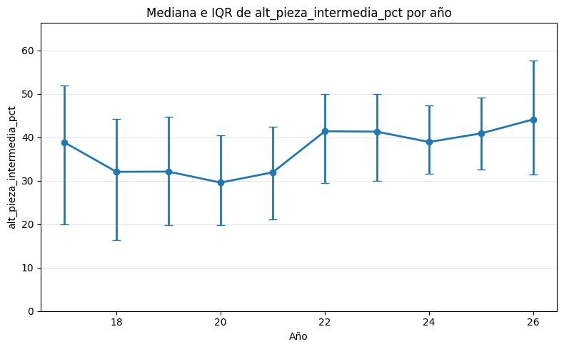
| n | media | mediana | min | max | sd | var | q1 | q3 | skewness | |
|---|---|---|---|---|---|---|---|---|---|---|
| año | ||||||||||
| 17 | 356 | 36.93 | 38.89 | 0.00 | 79.30 | 20.56 | 422.74 | 19.95 | 52.04 | -0.01 |
| 18 | 400 | 32.63 | 32.08 | 0.00 | 95.90 | 19.11 | 365.04 | 16.32 | 44.24 | 0.43 |
| 19 | 380 | 32.07 | 32.12 | 0.00 | 84.00 | 18.25 | 332.90 | 19.77 | 44.71 | 0.13 |
| 20 | 255 | 30.00 | 29.59 | 0.00 | 77.00 | 16.31 | 265.86 | 19.78 | 40.40 | 0.25 |
| 21 | 304 | 32.53 | 31.95 | 0.00 | 89.17 | 16.37 | 268.11 | 21.20 | 42.53 | 0.32 |
| 22 | 287 | 39.77 | 41.41 | 0.00 | 98.00 | 18.19 | 330.88 | 29.46 | 50.00 | -0.27 |
| 23 | 262 | 39.29 | 41.32 | 0.00 | 85.26 | 16.15 | 260.81 | 30.05 | 50.00 | -0.39 |
| 24 | 256 | 38.47 | 38.94 | 0.00 | 74.00 | 14.65 | 214.57 | 31.57 | 47.43 | -0.49 |
| 25 | 276 | 40.69 | 40.93 | 0.00 | 88.88 | 16.72 | 279.56 | 32.64 | 49.10 | -0.34 |
| 26 | 62 | 43.74 | 44.16 | 0.00 | 77.89 | 20.55 | 422.23 | 31.52 | 57.69 | -0.38 |
kruskal_var('alt_pieza_intermedia_pct')
Kruskal-Wallis
H = 153.4041
p = 0.000000
post_hoc_dunn('alt_pieza_intermedia_pct')
| año_1 | año_2 | p-valor | |
|---|---|---|---|
| 28 | 20 | 25 | 0.00 |
| 25 | 20 | 22 | 0.00 |
| 26 | 20 | 23 | 0.00 |
| 15 | 18 | 25 | 0.00 |
| 22 | 19 | 25 | 0.00 |
| 33 | 21 | 25 | 0.00 |
| 27 | 20 | 24 | 0.00 |
| 19 | 19 | 22 | 0.00 |
| 12 | 18 | 22 | 0.00 |
| 30 | 21 | 22 | 0.00 |
| 29 | 20 | 26 | 0.00 |
| 20 | 19 | 23 | 0.00 |
| 13 | 18 | 23 | 0.00 |
| 31 | 21 | 23 | 0.00 |
| 2 | 17 | 20 | 0.00 |
| 21 | 19 | 24 | 0.00 |
| 14 | 18 | 24 | 0.00 |
| 32 | 21 | 24 | 0.01 |
| 23 | 19 | 26 | 0.01 |
| 16 | 18 | 26 | 0.01 |
| 34 | 21 | 26 | 0.01 |
Indice teratozoospermia#
graficas_numericas('indice_teratozoospermia')
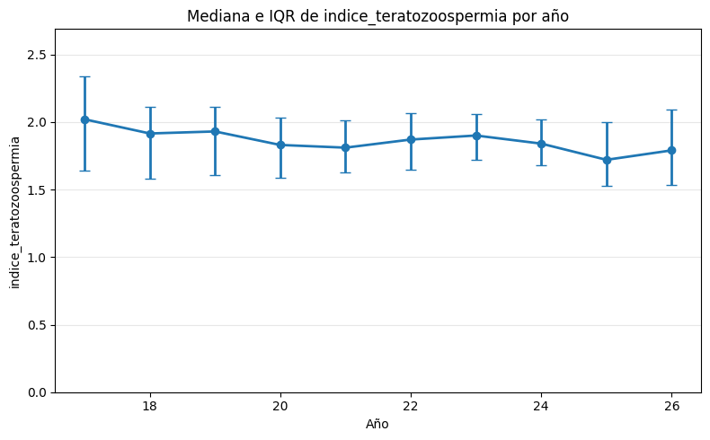
| n | media | mediana | min | max | sd | var | q1 | q3 | skewness | |
|---|---|---|---|---|---|---|---|---|---|---|
| año | ||||||||||
| 17 | 354 | 1.91 | 2.02 | 0.00 | 2.69 | 0.61 | 0.38 | 1.64 | 2.34 | -1.67 |
| 18 | 398 | 1.81 | 1.92 | 0.00 | 2.77 | 0.51 | 0.26 | 1.58 | 2.11 | -1.89 |
| 19 | 380 | 1.77 | 1.93 | 0.00 | 2.96 | 0.62 | 0.38 | 1.60 | 2.11 | -1.79 |
| 20 | 256 | 1.72 | 1.83 | 0.00 | 2.95 | 0.56 | 0.32 | 1.59 | 2.03 | -1.90 |
| 21 | 303 | 1.76 | 1.81 | 0.00 | 3.03 | 0.50 | 0.25 | 1.63 | 2.01 | -1.90 |
| 22 | 288 | 1.75 | 1.87 | 0.00 | 2.72 | 0.56 | 0.32 | 1.65 | 2.06 | -2.02 |
| 23 | 263 | 1.80 | 1.90 | 0.00 | 2.59 | 0.48 | 0.23 | 1.72 | 2.06 | -2.65 |
| 24 | 256 | 1.77 | 1.84 | 0.00 | 2.83 | 0.47 | 0.22 | 1.68 | 2.02 | -2.40 |
| 25 | 276 | 1.68 | 1.72 | 0.00 | 2.63 | 0.49 | 0.24 | 1.53 | 2.00 | -2.09 |
| 26 | 62 | 1.73 | 1.79 | 0.00 | 2.51 | 0.54 | 0.29 | 1.54 | 2.10 | -1.98 |
kruskal_var('indice_teratozoospermia')
Kruskal-Wallis
H = 90.3389
p = 0.000000
post_hoc_dunn('indice_teratozoospermia')
| año_1 | año_2 | p-valor | |
|---|---|---|---|
| 7 | 17 | 25 | 0.00 |
| 3 | 17 | 21 | 0.00 |
| 2 | 17 | 20 | 0.00 |
| 6 | 17 | 24 | 0.00 |
| 22 | 19 | 25 | 0.00 |
| 15 | 18 | 25 | 0.00 |
| 4 | 17 | 22 | 0.00 |
| 40 | 23 | 25 | 0.03 |
| 0 | 17 | 18 | 0.03 |
Parámetros por año teniendo en cuenta días de abstinencia y edad, subclasificación por grupos:
=< 1, 2, 3, 4, 5, 6, 7 >= dias abstinencia
< 25, 25-39, 30-34, 35-39, 40-44, 45-49, 50 >= edad
Bivariado#
df_sin_texto['grupo_abstinencia'] = pd.cut(
df_sin_texto['dias_abstinencia'],
bins=[-np.inf, 1, 2, 3, 4, 5, 6, np.inf],
labels=['≤1', '2', '3', '4', '5', '6', '≥7']
)
df_sin_texto['grupo_edad'] = pd.cut(
df_sin_texto['edad'],
bins=[-np.inf, 24, 29, 34, 39, 44, 49, np.inf],
labels=['<25', '25-29', '30-34', '35-39', '40-44', '45-49', '≥50']
)
def graficas_edad_abstinencia(var):
fig, axes = plt.subplots(1, 2, figsize=(18, 6), sharey=True)
# ==========================================================
# EDAD
# ==========================================================
resumen = (
df_sin_texto
.groupby(['año', 'grupo_edad'])[var]
.agg(
mediana='median',
q1=lambda x: x.quantile(.25),
q3=lambda x: x.quantile(.75)
)
.reset_index()
)
años = sorted(resumen['año'].unique())
grupos = resumen['grupo_edad'].cat.categories
x = np.arange(len(años))
width = 0.10
for i, grupo in enumerate(grupos):
datos = (
resumen[resumen['grupo_edad'] == grupo]
.set_index('año')
.reindex(años)
)
posicion = x + (i-(len(grupos)-1)/2)*width
axes[0].errorbar(
posicion,
datos['mediana'],
yerr=[
datos['mediana']-datos['q1'],
datos['q3']-datos['mediana']
],
fmt='o',
capsize=3,
linewidth=1.5,
markersize=5,
label=str(grupo)
)
axes[0].set_xticks(x)
axes[0].set_xticklabels(años)
axes[0].set_xlabel("Año")
axes[0].set_ylabel(var)
axes[0].set_title(f"{var} por grupo etario")
axes[0].legend(
title="Edad",
bbox_to_anchor=(1.02,1),
loc="upper left"
)
axes[0].grid(axis='y', alpha=.3)
# ==========================================================
# ABSTINENCIA
# ==========================================================
resumen = (
df_sin_texto
.groupby(['año', 'grupo_abstinencia'])[var]
.agg(
mediana='median',
q1=lambda x: x.quantile(.25),
q3=lambda x: x.quantile(.75)
)
.reset_index()
)
grupos = resumen['grupo_abstinencia'].cat.categories
for i, grupo in enumerate(grupos):
datos = (
resumen[resumen['grupo_abstinencia']==grupo]
.set_index('año')
.reindex(años)
)
posicion = x + (i-(len(grupos)-1)/2)*width
axes[1].errorbar(
posicion,
datos['mediana'],
yerr=[
datos['mediana']-datos['q1'],
datos['q3']-datos['mediana']
],
fmt='o',
capsize=3,
linewidth=1.5,
markersize=5,
label=str(grupo)
)
axes[1].set_xticks(x)
axes[1].set_xticklabels(años)
axes[1].set_xlabel("Año")
axes[1].set_title(f"{var} por días de abstinencia")
axes[1].legend(
title="Abstinencia",
bbox_to_anchor=(1.02,1),
loc="upper left"
)
axes[1].grid(axis='y', alpha=.3)
plt.tight_layout()
plt.show()
Bivariado volumen#
graficas_edad_abstinencia("volumen_ml")
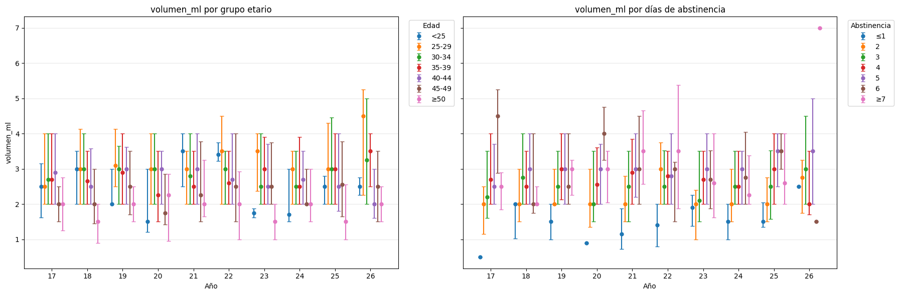
Bivariado total eyaculado#
graficas_edad_abstinencia("espermatozoides_por_eyaculado")
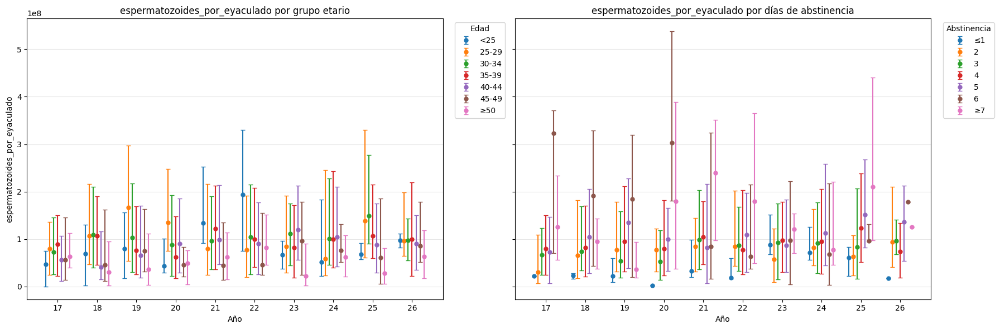
Bivariado concentración eyaculado#
graficas_edad_abstinencia("concentracion_por_ml")
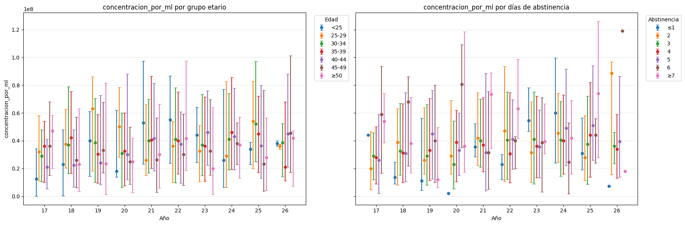
Bivariado motilidad progresiva#
graficas_edad_abstinencia("motilidad_progresiva_pct")
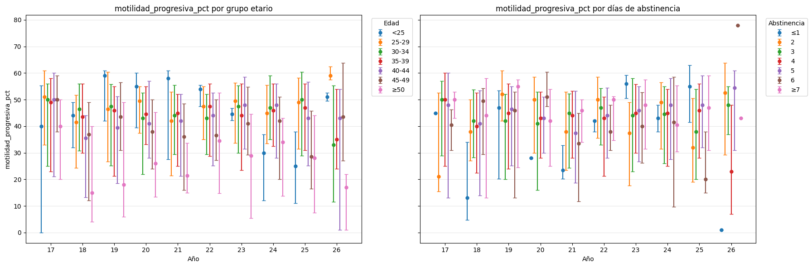
Bivariado motilidad total#
graficas_edad_abstinencia("motilidad_total_pct")
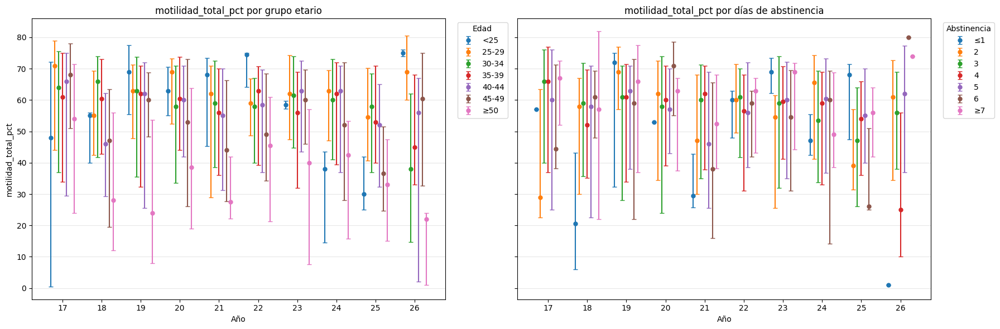
Bivariado normales pct#
graficas_edad_abstinencia("espermatozoides_normales_pct")
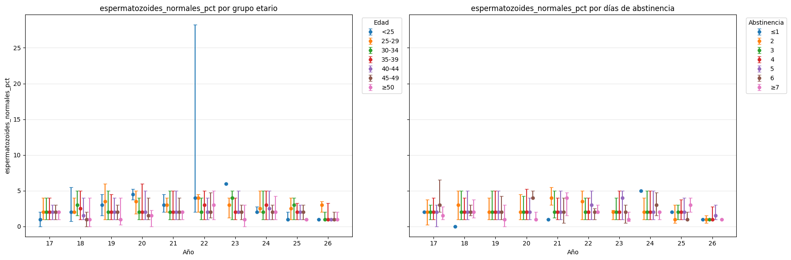
Regresiones lineales#
def adjusted_prediction(model, var):
año_range = np.linspace(df['año'].min(), df['año'].max(), 100)
X_pred = pd.DataFrame({
'año': año_range,
'edad': df['edad'].mean(),
'dias_abstinencia': df['dias_abstinencia'].mean()
})
pred = model.get_prediction(X_pred)
pred_df = pred.summary_frame(alpha=0.05)
fig, ax = plt.subplots(figsize=(4, 4))
ax.fill_between(año_range, pred_df['mean_ci_lower'], pred_df['mean_ci_upper'],
color='gray', alpha=0.3, linewidth=0)
ax.plot(año_range, pred_df['mean'], color='black', linewidth=1)
ax.set_xlabel('Año')
ax.set_ylabel(var)
# Estilo minimalista (quitar bordes superior/derecho)
ax.spines['top'].set_visible(False)
ax.spines['right'].set_visible(False)
plt.tight_layout()
plt.show()
Volumen#
import statsmodels.formula.api as smf
modelo_vol = smf.ols(
'volumen_ml ~ año + edad + dias_abstinencia',
data=df
).fit()
print(modelo_vol.summary())
OLS Regression Results
==============================================================================
Dep. Variable: volumen_ml R-squared: 0.033
Model: OLS Adj. R-squared: 0.032
Method: Least Squares F-statistic: 39.73
Date: Tue, 30 Jun 2026 Prob (F-statistic): 3.10e-25
Time: 18:26:05 Log-Likelihood: -6223.3
No. Observations: 3466 AIC: 1.245e+04
Df Residuals: 3462 BIC: 1.248e+04
Df Model: 3
Covariance Type: nonrobust
====================================================================================
coef std err t P>|t| [0.025 0.975]
------------------------------------------------------------------------------------
Intercept 3.6706 0.228 16.120 0.000 3.224 4.117
año 0.0124 0.009 1.331 0.183 -0.006 0.031
edad -0.0334 0.003 -9.949 0.000 -0.040 -0.027
dias_abstinencia 0.0538 0.011 4.871 0.000 0.032 0.076
==============================================================================
Omnibus: 627.497 Durbin-Watson: 1.721
Prob(Omnibus): 0.000 Jarque-Bera (JB): 1416.524
Skew: 1.032 Prob(JB): 2.54e-308
Kurtosis: 5.356 Cond. No. 403.
==============================================================================
Notes:
[1] Standard Errors assume that the covariance matrix of the errors is correctly specified.
adjusted_prediction(modelo_vol, 'Volumen (mL)')
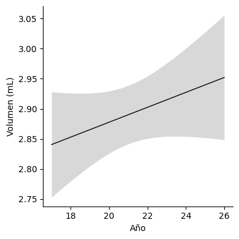
Total eyaculado#
modelo_tot = smf.ols(
'espermatozoides_por_eyaculado ~ año + edad + dias_abstinencia',
data=df
).fit()
print(modelo_tot.summary())
OLS Regression Results
=========================================================================================
Dep. Variable: espermatozoides_por_eyaculado R-squared: 0.032
Model: OLS Adj. R-squared: 0.031
Method: Least Squares F-statistic: 37.56
Date: Tue, 30 Jun 2026 Prob (F-statistic): 7.04e-24
Time: 18:26:06 Log-Likelihood: -69764.
No. Observations: 3467 AIC: 1.395e+05
Df Residuals: 3463 BIC: 1.396e+05
Df Model: 3
Covariance Type: nonrobust
====================================================================================
coef std err t P>|t| [0.025 0.975]
------------------------------------------------------------------------------------
Intercept 9.412e+07 2.07e+07 4.539 0.000 5.35e+07 1.35e+08
año 4.427e+06 8.47e+05 5.226 0.000 2.77e+06 6.09e+06
edad -2.241e+06 3.05e+05 -7.345 0.000 -2.84e+06 -1.64e+06
dias_abstinencia 6.328e+06 1.01e+06 6.286 0.000 4.35e+06 8.3e+06
==============================================================================
Omnibus: 1423.782 Durbin-Watson: 1.747
Prob(Omnibus): 0.000 Jarque-Bera (JB): 8412.632
Skew: 1.861 Prob(JB): 0.00
Kurtosis: 9.662 Cond. No. 403.
==============================================================================
Notes:
[1] Standard Errors assume that the covariance matrix of the errors is correctly specified.
adjusted_prediction(modelo_tot, 'Total eyaculado')
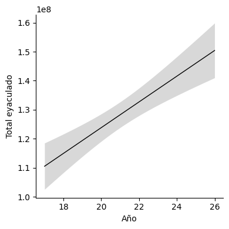
Concentración eyaculado#
modelo_conc = smf.ols(
'concentracion_por_ml ~ año + edad + dias_abstinencia',
data=df
).fit()
print(modelo_conc.summary())
OLS Regression Results
================================================================================
Dep. Variable: concentracion_por_ml R-squared: 0.013
Model: OLS Adj. R-squared: 0.013
Method: Least Squares F-statistic: 15.71
Date: Tue, 30 Jun 2026 Prob (F-statistic): 3.82e-10
Time: 18:26:06 Log-Likelihood: -65767.
No. Observations: 3467 AIC: 1.315e+05
Df Residuals: 3463 BIC: 1.316e+05
Df Model: 3
Covariance Type: nonrobust
====================================================================================
coef std err t P>|t| [0.025 0.975]
------------------------------------------------------------------------------------
Intercept 2.018e+07 6.55e+06 3.082 0.002 7.34e+06 3.3e+07
año 1.505e+06 2.67e+05 5.627 0.000 9.81e+05 2.03e+06
edad -2.58e+05 9.64e+04 -2.678 0.007 -4.47e+05 -6.91e+04
dias_abstinencia 1.022e+06 3.18e+05 3.215 0.001 3.99e+05 1.65e+06
==============================================================================
Omnibus: 726.915 Durbin-Watson: 1.714
Prob(Omnibus): 0.000 Jarque-Bera (JB): 1477.264
Skew: 1.236 Prob(JB): 0.00
Kurtosis: 5.027 Cond. No. 403.
==============================================================================
Notes:
[1] Standard Errors assume that the covariance matrix of the errors is correctly specified.
adjusted_prediction(modelo_conc, 'Concentración por mL')
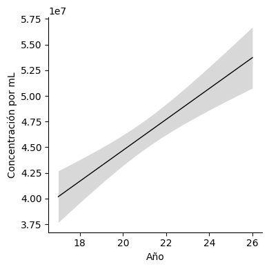
Motilidad progresiva#
modelo_mot_prog = smf.ols(
'motilidad_progresiva_pct ~ año + edad + dias_abstinencia',
data=df
).fit()
print(modelo_mot_prog.summary())
OLS Regression Results
====================================================================================
Dep. Variable: motilidad_progresiva_pct R-squared: 0.025
Model: OLS Adj. R-squared: 0.024
Method: Least Squares F-statistic: 29.86
Date: Tue, 30 Jun 2026 Prob (F-statistic): 4.73e-19
Time: 18:26:06 Log-Likelihood: -15317.
No. Observations: 3465 AIC: 3.064e+04
Df Residuals: 3461 BIC: 3.067e+04
Df Model: 3
Covariance Type: nonrobust
====================================================================================
coef std err t P>|t| [0.025 0.975]
------------------------------------------------------------------------------------
Intercept 50.9029 3.145 16.186 0.000 44.737 57.069
año 0.2174 0.129 1.692 0.091 -0.035 0.469
edad -0.4358 0.046 -9.417 0.000 -0.527 -0.345
dias_abstinencia 0.0772 0.153 0.506 0.613 -0.222 0.376
==============================================================================
Omnibus: 301.722 Durbin-Watson: 1.732
Prob(Omnibus): 0.000 Jarque-Bera (JB): 200.820
Skew: -0.473 Prob(JB): 2.47e-44
Kurtosis: 2.296 Cond. No. 403.
==============================================================================
Notes:
[1] Standard Errors assume that the covariance matrix of the errors is correctly specified.
adjusted_prediction(modelo_mot_prog, 'Motilidad progresiva (%)')
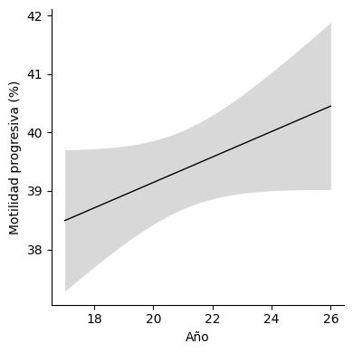
Motilidad total#
modelo_mot_tot = smf.ols(
'motilidad_total_pct ~ año + edad + dias_abstinencia',
data=df
).fit()
print(modelo_mot_tot.summary())
OLS Regression Results
===============================================================================
Dep. Variable: motilidad_total_pct R-squared: 0.026
Model: OLS Adj. R-squared: 0.025
Method: Least Squares F-statistic: 30.50
Date: Tue, 30 Jun 2026 Prob (F-statistic): 1.86e-19
Time: 18:26:06 Log-Likelihood: -15960.
No. Observations: 3466 AIC: 3.193e+04
Df Residuals: 3462 BIC: 3.195e+04
Df Model: 3
Covariance Type: nonrobust
====================================================================================
coef std err t P>|t| [0.025 0.975]
------------------------------------------------------------------------------------
Intercept 76.3507 3.781 20.195 0.000 68.938 83.763
año -0.2983 0.154 -1.931 0.054 -0.601 0.005
edad -0.5106 0.056 -9.182 0.000 -0.620 -0.402
dias_abstinencia 0.0678 0.183 0.370 0.712 -0.292 0.428
==============================================================================
Omnibus: 325.520 Durbin-Watson: 1.743
Prob(Omnibus): 0.000 Jarque-Bera (JB): 308.889
Skew: -0.667 Prob(JB): 8.42e-68
Kurtosis: 2.402 Cond. No. 403.
==============================================================================
Notes:
[1] Standard Errors assume that the covariance matrix of the errors is correctly specified.
adjusted_prediction(modelo_mot_tot, 'Motilidad Total (%)')
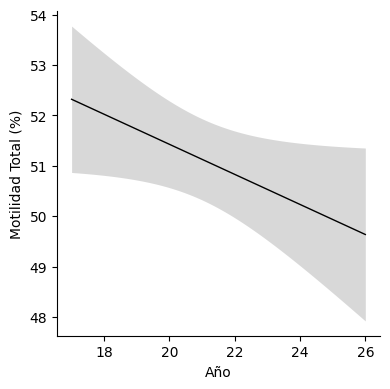
Normales pct#
modelo_norm = smf.ols(
'espermatozoides_normales_pct ~ año + edad + dias_abstinencia',
data=df
).fit()
print(modelo_norm.summary())
OLS Regression Results
========================================================================================
Dep. Variable: espermatozoides_normales_pct R-squared: 0.004
Model: OLS Adj. R-squared: 0.003
Method: Least Squares F-statistic: 4.030
Date: Tue, 30 Jun 2026 Prob (F-statistic): 0.00716
Time: 18:26:06 Log-Likelihood: -8255.2
No. Observations: 2844 AIC: 1.652e+04
Df Residuals: 2840 BIC: 1.654e+04
Df Model: 3
Covariance Type: nonrobust
====================================================================================
coef std err t P>|t| [0.025 0.975]
------------------------------------------------------------------------------------
Intercept 3.8919 0.764 5.095 0.000 2.394 5.390
año 0.0221 0.031 0.715 0.475 -0.038 0.083
edad -0.0389 0.011 -3.391 0.001 -0.061 -0.016
dias_abstinencia 0.0301 0.044 0.684 0.494 -0.056 0.116
==============================================================================
Omnibus: 5371.396 Durbin-Watson: 1.970
Prob(Omnibus): 0.000 Jarque-Bera (JB): 9921535.094
Skew: 14.148 Prob(JB): 0.00
Kurtosis: 290.968 Cond. No. 400.
==============================================================================
Notes:
[1] Standard Errors assume that the covariance matrix of the errors is correctly specified.
adjusted_prediction(modelo_norm, 'Espermatozoides normales (%)')
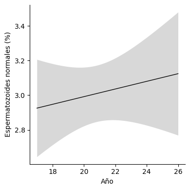
Análisis intrapaciente#
pacientes = (
df
.sort_values(['identificacion','año'])
)
primero = (
pacientes
.groupby('identificacion')
.first()
)
ultimo = (
pacientes
.groupby('identificacion')
.last()
)
pares = (
primero.add_suffix('_1')
.join(
ultimo.add_suffix('_2')
)
)
pares = pares[pares['codigo_1'] != pares['codigo_2']]
pares['años'] = (
pares['año_2']-
pares['año_1']
)
pares['grupo'] = pd.cut(
pares['años'],
bins=[-0.1,0,2,5,np.inf],
labels=[
'<1 año',
'1-3 años',
'3-5 años',
'>5 años'
]
)
pares['grupo'].value_counts()
grupo
1-3 años 186
<1 año 184
3-5 años 73
>5 años 16
Name: count, dtype: int64
Volumen#
def grupos_intra(variable):
plot_df = pd.concat([
pares[['grupo', f'{variable}_1']].rename(
columns={f'{variable}_1': variable}
).assign(Muestra='Primer'),
pares[['grupo', f'{variable}_2']].rename(
columns={f'{variable}_2': variable}
).assign(Muestra='Último')
])
plt.figure(figsize=(9,6))
sns.boxplot(
data=plot_df,
x='grupo',
y=variable,
hue='Muestra',
width=0.6,
showfliers=False
)
plt.xlabel("Tiempo entre espermogramas")
plt.ylabel(variable)
plt.title(f"Cambios intraindividuales en {variable}")
plt.legend(title="")
plt.tight_layout()
plt.show()
grupos_intra('volumen_ml')
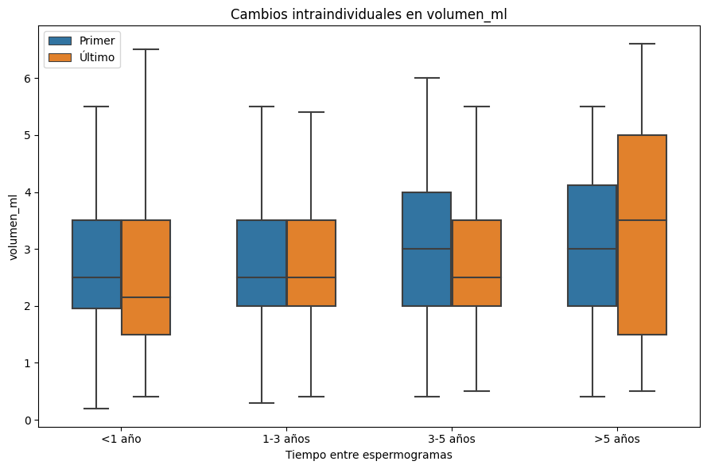
Total eyaculado#
grupos_intra('espermatozoides_por_eyaculado')
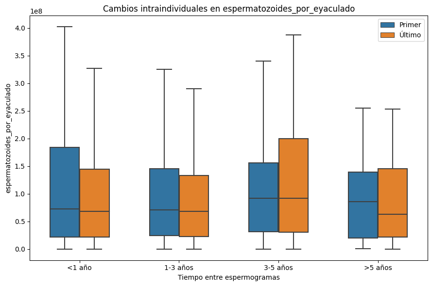
Concentración eyaculado#
grupos_intra('concentracion_por_ml')
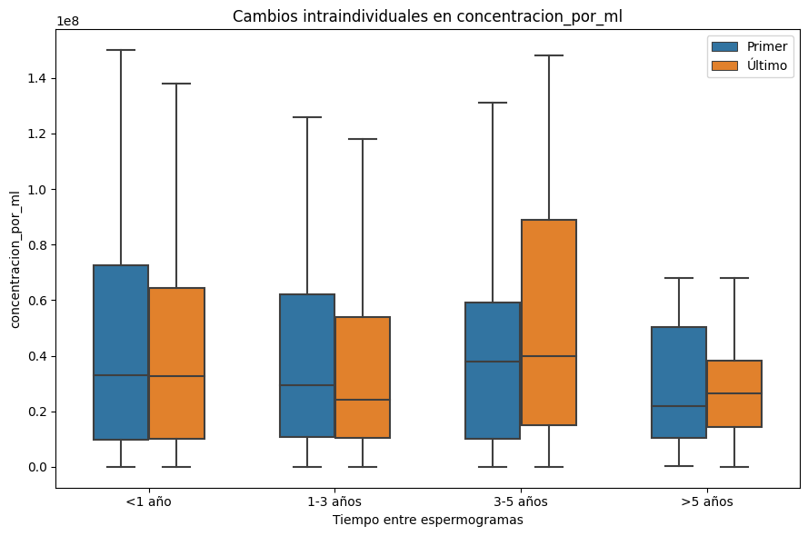
Motilidad progresiva#
grupos_intra('motilidad_progresiva_pct')
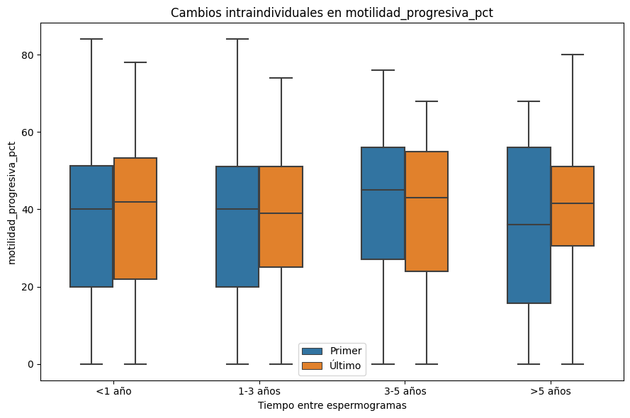
Motilidad total#
grupos_intra('motilidad_total_pct')
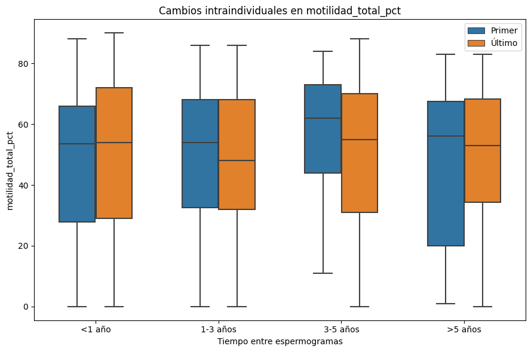
Normales pct#
grupos_intra('espermatozoides_normales_pct')
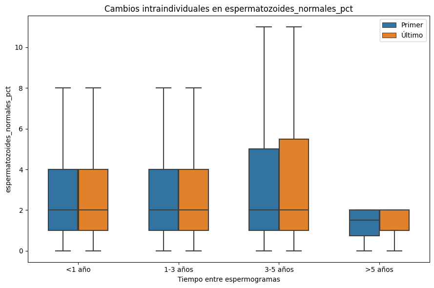